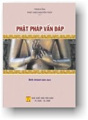

BuddhaSasana
Home Page
This document is written in Vietnamese, with Unicode
Times font
|  |
THERAVĀDA PHẬT PHÁP VẤN ĐÁP Bình Anson biên dịch NHÀ XUẤT BẢN TÔN GIÁO |
KHÉO VẤN, KHÉO ĐÁP Nguyên tác: Good Question, Good Answer Lời Tựa Tỳ khưu Shravasti Dhammika là một nhà sư người Úc. Ngài là giảng sư lỗi lạc về môn Phật giáo và các Tôn Giáo Á Châu tại các trường đại học, trên các đài truyền hình và truyền thanh tại Úc và khắp nơi trong vùng Đông Nam Á. Trong quyển sách này, ngài Dhammika giải đáp những thắc mắc về giáo huấn của Đức Phật mà người ta thường nêu lên để hỏi ngài. Lối trả lời của ngài thật là chính xác, rõ ràng và minh bạch. Quý vị nào chưa từng quen thuộc với Phật giáo sẽ thấy nơi đây những tia sáng bao trùm toàn diện vấn đề. Quý vị nào đã đi sâu vào Đạo sẽ hoan hỷ tiếp nhận thêm những bổ túc thích thú cho sự hiểu biết của mình. Phạm Kim Khánh, Hoa Kỳ, 1994 * Với sự đồng ý của bác Phạm Kim Khánh, chúng tôi đã hiệu đính lại bản dịch cũ. Ngoài ra, bản dịch 2006 này có bổ sung thêm các chương mới, dựa theo ấn bản điện tử Anh ngữ 2003 phổ biến trên trang web Phật giáo BuddhaNet (http://www.budhanet.net). Bình Anson, Úc châu, 2006 * 1. PHẬT GIÁO LÀ GÌ? VẤN: Phật giáo là gì?ĐÁP: Danh từ Phật giáo (Buddhism) xuất nguyên từ chữ "buddhi", có nghĩa "giác ngộ", "thức tỉnh", và như vậy, Phật giáo là tôn giáo đưa đến giác ngộ. Giáo thuyết này phát xuất từ kinh nghiệm của một người, Ngài Siddhatta Gotama (Sĩ-đạt-ta Cồ-đàm), tự mình giác ngộ vào lúc 35 tuổi và được tôn là Phật. Đến nay, Phật giáo tồn tại hơn 2.500 năm và có khoảng 300 triệu tín đồ trên khắp thế giới. Cho đến cách đây độ một trăm năm, Phật giáo chính yếu là một triết học của người Á Đông, nhưng rồi dần dần có thêm nhiều người Âu, Úc và Mỹ lưu tâm đến. VẤN: Như vậy, Phật giáo chỉ là một triết học (philosophy)? ĐÁP: Danh từ "philosophy", triết học, có hai phần: "philo" có nghĩa ưa thích, yêu chuộng, và "sophia" có nghĩa trí tuệ. Như vậy, triết học (philosophy) là sự yêu chuộng trí tuệ, hoặc tình thương và trí tuệ. Cả hai ý nghĩa này mô tả Phật giáo một cách toàn hảo. Phật giáo dạy ta nên cố gắng phát triển trọn vẹn khả năng trí thức để có thể thông suốt rõ ràng. Phật giáo cũng dạy ta phát triển lòng từ bi để có thể là người bạn thật sự của tất cả mọi chúng sinh. Như vậy, Phật giáo là một triết học, nhưng không phải chỉ là một triết học. Phật giáo là triết học tối thượng. VẤN: Đức Phật là ai? ĐÁP: Vào năm 623 trước Tây Lịch, một cậu bé được sinh ra trong một hoàng tộc tại miền bắc xứ Ấn Độ. Vị hoàng tử trưởng thành trong nhung lụa, trong cảnh giàu sang nhung lụa, nhưng rồi sớm nhận thức rằng tiện nghi vật chất và an toàn trong thế gian không bảo đảm được hạnh phúc. Ngài động lòng trắc ẩn sâu xa trước hoàn cảnh khổ đau của những người sống chung quanh và nhất định tìm cho ra bí quyết của hạnh phúc nhân loại. Vào năm 29 tuổi, Ngài rời vợ và con, cất bước lên đường, rồi ngồi lại dưới chân những vị đạo sư trứ danh thời bấy giờ để học. Những vị này dạy Ngài nhiều điều, nhưng không vị nào thật sự hiểu biết nguồn cội khổ đau của nhân loại và làm thế nào để vượt thoát ra khỏi nguồn cội khổ đau đó. Cuối cùng, sau sáu năm tu học và hành thiền, Ngài thu hoạch đủ kinh nghiệm để tự phá vỡ màn vô minh và thành đạt giác ngộ. Kể từ đó, Ngài được tôn là Phật, bậc Chánh đẳng Chánh giác. Trong bốn mươi lăm năm trường, Ngài chu du cùng khắp miền bắc xứ Ấn Độ để dạy người khác những gì chính Ngài đã chứng ngộ. Lòng từ bi và hạnh nhẫn nhục của Ngài quả thật là kỳ diệu, và hằng ngàn người đã theo Ngài, trở thành tín đồ Phật giáo. Đến năm được tám mươi tuổi thọ, già yếu và bệnh hoạn, nhưng lúc nào cũng hạnh phúc và an bình, Ngài nhập diệt. VẤN: Đức Phật ra đi, lìa bỏ vợ con, như vậy có phải là lẩn tránh nhiệm vụ không? ĐÁP: Đối với Đức Phật, dứt lìa gia đình để ra đi có thể không phải là chuyện dễ. Chắc chắn là Ngài đã đắn đo thắc mắc và do dự lâu ngày trước khi quyết định. Trước mặt Ngài có hai con đường: hiến thân cho gia đình, và tự hiến mình cho toàn thể thế gian. Sau cùng, vì lòng từ bi vô lượng, Ngài quyết định tự cống hiến cho thế gian. Và đến nay, toàn thể thế gian vẫn còn thọ hưởng những lợi ích từ lòng hy sinh cao cả của Ngài. Đây không phải là sự lẩn tránh trách niệm. Đây có lẽ là cuộc hy sinh có nhiều ý nghĩa cao cả nhất, từ xưa đến nay. VẤN: Đức Phật đã nhập diệt, làm thế nào Ngài có thể giúp ta? ĐÁP: Ông Faraday là người khám phá ra điện, ông nay đã qua đời, nhưng những gì ông sáng chế vẫn còn giúp ích cho chúng ta. Ông Louis Pasteur đã tìm ra phương thức trị liệu cho nhiều chứng bệnh. Ông ta đã chết, nhưng đến nay những khám phá y khoa ấy vẫn còn cứu mạng nhiều người. Ông Leonardo da Vinci, người sáng tạo nhiều tác phẩm mỹ thuật, nay đã chết. Nhưng, những gì ông sáng tác vẫn còn làm phấn khởi tinh thần và giúp cho nhiều người hoan hỷ thưởng thức. Những bậc cao nhân và anh hùng hào kiệt đã ra người thiên cổ từ cả mấy thế kỷ, nhưng khi đọc lại lịch sử oai hùng về những gì các vị ấy đã làm và thành tựu, chúng ta vẫn còn tìm được nguồn gợi cảm và muốn làm như các ngài. Đúng vậy, Đức Phật đã nhập diệt, nhưng 2.500 năm sau, giáo huấn của Ngài vẫn còn tế độ chúng sinh, gương lành của Ngài vẫn còn là nguồn gợi cảm cho nhiều người, những lời dạy của Ngài vẫn còn làm thay đổi nhiều cuộc sống. Chỉ có Đức Phật mới có thể có oai lực hùng mạnh như thế ấy, trong nhiều thế kỷ sau khi chết. VẤN: Đức Phật có phải là một thần linh không? ĐÁP: Không, Ngài không phải thần linh. Ngài không bao giờ tự xưng là thần linh, là con của một thần linh hay là sứ giả của một thần linh. Ngài là một con người đã tự cải thiện để trở nên toàn hảo, và dạy rằng nếu ta noi theo gương lành ấy, chính ta cũng có thể trở nên toàn hảo như Ngài. VẤN: Nếu Đức Phật không phải là thần linh, tại sao người ta sùng kính lễ bái Ngài? ĐÁP: Có nhiều cách lễ bái khác nhau. Khi lễ bái thần linh, người ta tán thán công đức và tôn vinh, dâng cúng lễ vật và van xin ân huệ, tin tưởng rằng vị thần linh sẽ lắng tai nghe lời mình tán thán công đức, sẽ nhận lãnh lễ vật, và sẽ thoả mãn lời cầu nguyện của mình. Người Phật tử không tự nuông chiều trong loại lễ bái ấy. Còn phương cách lễ bái khác là để tỏ lòng tôn kính người hay vật mà mình khâm phục. Khi vị thầy giáo bước vào phòng, ta đứng dậy. Khi gặp người đáng tôn kính, ta xá chào. Khi nghe quốc thiều trổi lên, ta nghiêm chỉnh đứng chào. Đó là những cử chỉ tôn kính và lễ bái để tỏ lòng cảm phục và kính mộ của ta đối với một người hay một vật nào. Đó là loại lễ bái của người Phật tử. Một pho tượng Phật trong tư thế ngồi với hai tay dịu dàng đặt trên vế, với nụ cười tự tại, từ ái và bi mẫn, nhắc nhở chúng ta nỗ lực phát triển tình thương và an định nội tâm. Hương trầm nhắc ta mùi hương thâm diệu của giới đức, ngọn đèn tượng trưng ánh sáng của trí tuệ, và những cành hoa sớm nở tối tàn khơi dậy nơi ta ý niệm về đặc tướng vô thường của vạn pháp. Khi lễ lạy, ta bày tỏ lòng tri ân đối với Đức Phật, vì Ngài đã ban truyền cho ta những lời dạy vô cùng hữu ích. Đó là ý nghĩa của lễ lạy trong Phật giáo. VẤN: Nhưng tôi có nghe nói rằng người Phật tử lễ bái thần tượng. ĐÁP: Những lời phát biểu tương tự chỉ biểu lộ tình trạng kém hiểu biết của người nói. Tự điển định nghĩa thần tượng là "một hình ảnh hay một pho tượng được tôn sùng như thần linh". Như chúng ta đã thấy, người Phật tử không tin rằng Đức Phật là một thần linh, thì làm sao họ có thể tin rằng một khúc gỗ hay một khối kim khí là một thần linh? Tất cả các tôn giáo đều dùng biểu tượng để diễn đạt những khái niệm khác nhau. Đạo Lão dùng âm dương để tượng trưng trạng thái hòa diệu của hai cái đối nghịch. Đạo Sikh dùng lưỡi kiếm để tượng trưng sự chiến đấu tinh thần. Trong Ky-tô giáo, con cá được dùng để tượng trưng cho sự hy sinh của Chúa Giê-su. Trong Phật giáo, pho tượng Phật tượng trưng tính nhân bản của giáo lý nhà Phật, rằng Phật giáo lấy con người làm nồng cốt, không phải thần linh, rằng chúng ta phải quay nhìn vào bên trong, không phải hướng ra bên ngoài, để tìm trạng thái toàn hảo và trí tuệ. Như vậy, nói rằng người Phật tử sùng bái thần tượng là không đúng. VẤN: Tại sao người ta đốt giấy tiền vàng bạc và làm đủ điều kỳ dị trong chùa? ĐÁP: Đối với ta, có nhiều chuyện hình như rất kỳ lạ khi ta chưa thấu hiểu. Thay vì bác bỏ những lạ kỳ tương tự, ta nên cố gắng tìm hiểu ý nghĩa của nó. Đúng rằng lối hành lễ của người Phật tử đôi khi bắt nguồn từ những tín ngưỡng dị đoan và những hiểu biết lầm lạc trong dân gian, hơn là từ những lời dạy của Đức Phật. Những hiểu biết lầm lạc này không phải chỉ có trong Phật giáo. Chính Đức Phật đã dạy rất rành rẽ và với nhiều chi tiết, ta không thể đổ lỗi cho Ngài nếu có vài người không hiểu biết đầy đủ. Có câu châm ngôn: "Nếu người kia lâm bệnh mà không tìm cách chữa trị, mặc dầu có lương y ở sẵn bên cạnh, lỗi không phải tại vị lương y ấy. Cùng thế ấy, nếu người kia bị chứng bệnh ô nhiễm làm bứt rứt dày vò, mà không nhờ đến sự giúp đỡ của Đức Phật, thì lỗi ấy không phải tại Đức Phật" (JN 28-9). Ta cũng không nên xét đoán Phật giáo hay bất luận tôn giáo nào khác vì có người tín đồ thực hành sai lạc. Nếu bạn muốn hiểu biết giáo lý thật sự của Đức Phật, hãy đọc những lời Phật dạy, hoặc nói chuyện với những ai thông hiểu Phật pháp đúng đắn. VẤN: Nếu Phật giáo là tốt, tại sao các quốc gia Phật giáo lại nghèo như vậy? ĐÁP: Nghèo, nếu bạn muốn nói rằng vài quốc gia Phật giáo nghèo nàn về mặt kinh tế, thì quả đúng như thế. Nhưng, nếu xét về "phẩm chất của đời sống", thì có lẽ vài quốc gia Phật giáo rõ thật là khá giàu. Chẳng hạn như Hoa Kỳ, là một quốc gia phong phú cường thịnh, nhưng tỷ lệ số người phạm trọng tội cũng là cao nhất trên thế giới, hằng triệu người già yếu bị con cháu lãng quên và chết cô đơn trong các trại dưỡng lão, tình trạng bạo động trong gia đình và trẻ con bị ngược đãi là những vấn đề quan trọng. Trong ba gia đình có một cặp vợ chồng ly dị, báo chí và phim ảnh khiêu dâm là một kỹ nghệ lớn. Tuy là giàu có về mặt tiền của, nhưng phẩm chất của đời sống thì có lẽ quả thật là nghèo nàn. Bây giờ hãy thử nhìn xem các quốc gia có truyền thống Phật giáo, ta sẽ thấy rất khác biệt. Tại các xứ đó, cha mẹ được con cái trọng đãi và tôn kính, tỷ lệ tội phạm tương đối thấp, trường hợp ly dị và tự sát tương đối ít xảy ra, và các giá trị truyền thống như hòa nhã, rộng lượng bố thí, hiếu khách, bao dung và kính trọng người khác vẫn còn vững mạnh. Về mặt kinh tế thì hậu tiến, nhưng về phẩm chất của đời sống thì có lẽ cao hơn những quốc gia giàu có phồn thịnh như Hoa Kỳ. Nhưng nếu ta chỉ xét về mặt kinh tế mà thôi, ta cũng nên biết rằng một trong những quốc gia có nền kinh tế vững mạnh nhất trên thế giới ngày nay là Nhật Bản, và 93% người Nhật tự xem mình là Phật tử. VẤN: Tại sao ít khi nghe nói đến người Phật tử làm những công tác từ thiện? ĐÁP: Có lẽ bởi vì người Phật tử không cảm thấy cần phải khoe khoang những hành động từ thiện của họ. Nhiều năm trước, một nhà lãnh đạo Phật giáo Nhật Bản tên là Nikkho Nirwano nhận lãnh giải thưởng Templeton Prize vì ông có những công tác đem lại sự hòa hợp và khuyến khích tình thân hữu giữa các tôn giáo. Cùng thế ấy, mới đây, một nhà sư người Thái Lan vừa nhận lãnh giải thưởng trứ danh Magsaysay Prize, vì ngài có những công tác thượng thặng trong việc bài trừ ma túy. Vào năm 1987, một nhà sư Thái khác, Đại đức Kantayapiwat, được thưởng giải Norwegian Children’s Peace Prize vì trong nhiều năm, ngài đã gia công giúp đỡ trẻ con vô gia cư trong những vùng thôn dã. Còn những công tác xã hội rộng lớn của Hội Western Buddhist Order nhằm giúp người nghèo ở Ấn Độ thì sao? Họ xây cất những trường học, thành lập những trung tâm nhằm trợ giúp trẻ con, những bệnh viện, và những cơ sở kỹ nghệ ở tầm mức nhỏ để tự túc. Cũng như những người ở các tôn giáo khác, người Phật tử cũng xem các việc mà họ thực hiện để giúp người khác là một trong những phương cách thực hành Giáo Pháp, nhưng họ tin rằng những việc ấy phải được làm một cách âm thầm lặng lẽ và không lấy đó làm hãnh diện, tự mãn, xem mình là trọng. Do đó, bạn không được nghe nhiều về những công tác từ thiện xã hội của họ. VẤN: Tại sao Phật giáo có nhiều tông phái như vậy? ĐÁP: Có nhiều loại đường: đường nâu, đường phèn, đường cát, đường thẻ, đường táng, đường phổi v.v. nhưng tất cả các loại đường ấy đều có chung một vị, vị ngọt. Người ta làm đường dưới nhiều hình thức để tiện sử dụng trong những công việc khác nhau. Phật giáo cũng vậy. Có Phật giáo Nguyên thủy, Phật giáo Thiền tông, Phật giáo Tịnh độ, và Phật giáo Mật tông, nhưng tất cả những tông phái Phật giáo ấy đều có chung một vị, đó là vị giải thoát. Phật giáo phát triển dưới nhiều hình thức để có thể thích ứng với những nền văn hóa khác nhau. Xuyên qua nhiều thế kỷ, những hình thức Phật giáo được diễn giải khác nhau để thích ứng với thế hệ mới. Nhìn bề ngoài, các hình thức Phật giáo có thể xem hình như rất khác biệt, nhưng phần nồng cốt của tất cả vẫn là Tứ Diệu Đế và Bát Chánh Đạo. Tất cả những tôn giáo lớn, kể cả Phật giáo, đều được chia chẻ thành nhiều hệ phái và tông phái. Tuy nhiên, những tông phái khác nhau của Phật giáo không bao giờ gây chiến tranh chống đối lẫn nhau, không bao giờ tỏ ra thù hiềm lẫn nhau, và đến nay, người Phật tử đi lễ chùa, cúng dường và lễ Phật mà không phân biệt chùa ấy thuộc tông phái nào. Sự hiểu biết và đức tính khoan dung, không phân biệt ấy chắc chắn là hiếm có. VẤN: Phật giáo bắt đầu ở Ấn Độ nhưng cuối cùng thì tàn diệt ở đó. Tại sao? ĐÁP: Giáo pháp của Đức Phật đã phát triển thành một trong những tôn giáo chính ở Ấn Độ, nhưng dần dần, suy tàn và biến mất, cũng như Ky-tô giáo bắt đầu ở Palestine nhưng rồi cũng biến mất ở đó. Không ai thật sự biết rõ nguyên do. Có lẽ đó là do các biến đổi xã hội và chính trị cộng thêm với các cuộc chiến tranh và xâm chiếm đã làm cho một tôn giáo dịu dàng và hiếu hoà không thể tồn tại. Tuy nhiên, trước khi tàn diệt ở Ấn Độ, Phật giáo đã được truyền bá sang các vùng khác, xa xôi nhất của châu Á. VẤN: Chắc chắn là Sư rất tôn trọng Phật giáo. Tôi nghĩ rằng, có lẽ Sư thấy tôn giáo của Sư là đúng, và tất cả tôn giáo khác là sai? ĐÁP: Không có người Phật tử nào hiểu biết giáo huấn của Đức Phật mà lại tin rằng những tôn giáo khác là sai. Cũng không ai đã thật sự cố gắng khảo sát những tôn giáo khác với tôn giáo của mình trong tinh thần cởi mở mà lại nghĩ như thế. Việc đầu tiên mà ta lưu tâm đến khi nghiên cứu các tôn giáo khác nhau là những tôn giáo ấy có những điểm giống nhau nhiều ít thế nào. Tất cả mọi tôn giáo đều xác nhận rằng tình trạng hiện hữu của con người là bất toại nguyện. Tất cả đều tin rằng con người cần phải thay đổi thái độ và tác phong của mình, nếu muốn cải thiện hoàn cảnh. Tất cả đều dạy một nền tảng đạo đức, bao gồm tình thương, đức tính dịu hiền, hạnh nhẫn nhục, lòng quảng đại khoan hồng và tinh thần trách nhiệm xã hội, và tất cả đều chấp nhận một hình thức tuyệt đối nào đó. Người ta dùng những ngôn ngữ khác nhau, những danh từ và những biểu tượng khác nhau, để mô tả và giải thích những điều ấy, và chỉ có những tâm hồn hạn hẹp mới dính mắc, kẹt vào lối nhìn sự vật theo một chiều, phát sinh do tính cố chấp, thiếu khoan dung, hãnh diện tự cho rằng chỉ có mình là đúng. Ta thử tưởng tượng một người Anh, một người Pháp, một người Hoa và một người In-đô-nê-xia, tất cả đều nhìn một cái tách. Người Anh nói: "Đây là một cái Cup". Người Pháp trả lời: "Không phải vậy, đó là một cái Tasse". Người Hoa cãi lại: "Tất cả hai ông đều nói sai. Đó là cái Pei". Và người In-đô-nê-xia bật cười: "Các ông quả thật là điên rồ. Đó là một cái Cawan". Rồi người Anh lấy ra một quyển tự điển để chỉ cho mọi người và nói: "Tôi có thể chứng minh rằng đây là một cái Cup. Tự điển của tôi nói vậy". "Vậy thì tự điển của ông nói sai", người Pháp nói tiếp, "vì tự điển của tôi rõ ràng nói rằng đây là một cái Tasse". Người Hoa chế giễu: "Tự điển của tôi có trước tự điển của quý ông hơn cả ngàn năm, như vậy của tôi là đúng. Vả lại, trên thế giới người ta nói tiếng Hoa nhiều hơn bất luận thứ tiếng nào khác, như vậy đây phải là cái Pei". Trong khi họ cãi lẫy và tranh luận với nhau, một người Phật tử đến, rót nước vào cái tách, rồi uống. Khi uống xong người ấy nói: "Dù cho quý ông gọi đây là cái Cup, cái Tasse, cái Pei hoặc cái Cawan, cái này được làm ra để dùng. Xin quý ông ngưng cãi vã và hãy uống nước, ngưng chế giễu nhau và hãy giải khát". Đó là thái độ của người Phật tử đối với các tôn giáo khác. VẤN: Phật giáo có hợp với khoa học không? ĐÁP: Trước khi giải đáp câu hỏi, tốt hơn ta nên định nghĩa danh từ "khoa học" (science). Theo tự điển, khoa học là "kiến thức mà có thể hợp chung lại thành hệ thống, kiến thức thuận theo những gì ta thấy, những sự kiện được trắc nghiệm và nêu lên những định luật thiên nhiên tổng quát, là một ngành của kiến thức ấy, bất luận gì có thể khảo sát là đúng vậy". Có những sắc thái của Phật giáo không hợp đúng với định nghĩa này, nhưng giáo lý nồng cốt của Phật giáo, Tứ Diệu Đế, hay bốn chân lý thâm diệu, chắc chắn là thích ứng. Đế đầu tiên, Khổ đế, là một kinh nghiệm có thể mô tả, chứng nghiệm và đo lường. Đế thứ nhì, Tập đế, nói rằng đau khổ phát sinh do một nguyên nhân thiên nhiên, ái dục, cũng có thể mô tả, chứng nghiệm và đo lường. Không có sự cố gắng nào để giải thích đau khổ như một khái niệm hay những câu chuyện thần thoại có tính cách siêu hình. Đau khổ chấm dứt, theo Diệt đế – đế thứ ba, không phải bằng cách ỷ lại nơi một nhân vật tối cao, bằng đức tin, hay bằng cách van vái nguyện cầu, mà chỉ giản dị bằng cách diệt trừ nguyên nhân của nó. Đó là định lý rõ ràng và hiển nhiên. Đế thứ tư, Đạo đế, là con đường, phương cách để chấm dứt đau khổ, một lần nữa, không có gì liên quan đến siêu hình, mà chỉ tùy thuộc nơi cuộc sống theo những đường lối đặc thù. Và một lần nữa, lối sống này có thể được trắc nghiệm. Phật giáo, cũng như khoa học, không dựa trên khái niệm về một nhân vật tối thượng, mà giải thích những nguyên nhân và những sinh hoạt của vũ trụ, theo những định luật thiên nhiên. Tất cả những điểm này chắc chắn cho thấy rõ tinh thần khoa học. Một lần nữa, Đức Phật luôn luôn khuyên dạy không nên có đức tin mù quáng, mà phải nghiên cứu, học hỏi, khảo sát tận tường trước khi chấp nhận điều gì là chân lý. Ngài nói: "Đừng tin vì nghe nói lại, đừng tin vì theo phong tục, đừng tin vì nghe tin đồn, đừng tin vì kinh điển truyền tụng, đừng tin vì lý luận, đừng tin vì công thức, đừng tin vì có suy tư đầy đủ về những dữ kiện, đừng tin vì có thẩm sát và chấp nhận lý thuyết, đừng tin vì thấy thích hợp, đừng tin vì người đó là thầy mình. Nhưng khi nào quý vị tự biết rõ các pháp này là thiện, các pháp này là không đáng chê, các pháp này được người trí khen ngợi, các pháp này nếu thực hiện và chấp nhận thì dẫn đến hạnh phúc an vui, thời quý vị hãy tuân theo các pháp ấy" (Kinh Kalama, AN III.65). Do đó, chúng ta có thể nói rằng mặc dù Phật giáo không hoàn toàn là khoa học, nhưng tôn giáo này có màu sắc khoa học rất sâu đậm, và chắc chắc có nhiều tính khoa học hơn các tôn giáo khác. Đây là một sự kiện có ý nghĩa khi ông Albert Einstein, một nhà khoa học lỗi lạc nhất của thế kỷ 20 đã nói về Đạo Phật: "Tôn giáo của tương lai sẽ là một tôn giáo vũ trụ. Tôn giáo đó cần phải siêu hóa vị Thượng Đế cá thể, không có các giáo điều và thần học. Bao gồm tính thiên nhiên và tâm linh, nó phải dựa trên một ý nghĩa tôn giáo sinh khởi từ thể nghiệm của mọi sự việc, thiên nhiên lẫn tâm linh, và trên một sự hợp nhất có ý nghĩa. Phật giáo phù hợp với sự diễn tả này. Nếu có một tôn giáo nào có thể thỏa mãn các nhu cầu khoa học hiện đại thì tôn giáo đó phải là Phật giáo." * 2. KHÁI NIỆM CĂN BẢN VẤN: Điểm chính yếu trong Phật giáo là gì?ĐÁP: Tất cả các lời dạy của Đức Phật đều tập trung vào Tứ Diệu Đế – bốn chân lý cao thượng, cũng như trong bánh xe, tất cả những cây căm đều hợp lại nơi cái đùm của trục xe. Gọi là "Tứ", vì tất cả có bốn. Gọi là "Diệu" vì nó làm cho người ta hiểu biết nó trở thành cao thâm vi diệu. Và gọi là "Đế", hay chân lý, vì nó phù hợp với thực tế, nó là đạo lý chân thật, là chân lý. VẤN: Đế thứ nhất là gì? ĐÁP: Khổ đế, hay chân lý đầu tiên, nói rằng đời sống là đau khổ. Sống là phải khổ. Không thể sống mà không chứng nghiệm một loại đau khổ nào. Ta phải chịu đau khổ về vật chất như bệnh hoạn, thương tích, mệt mỏi, già nua, rồi chết. Và ta phải chịu đau khổ về mặt tâm linh như cô đơn, phiền giận, bực bội, sợ hãi, bối rối, thất vọng, sân hận v.v. VẤN: Nói như thế có phải chăng là bi quan yếm thế không? ĐÁP: Tự điển định nghĩa "bi quan" là "có thói quen nghĩ rằng bất luận gì sẽ xảy đến cũng là xấu", hoặc "tin rằng điều xấu mạnh thế hơn điều tốt". Phật giáo không dạy những gì giống như hai điều này, Phật giáo cũng không phủ nhận rằng có hạnh phúc trong đời sống. Phật giáo chỉ nói rằng sống là chứng nghiệm đau khổ, về thể chất và tinh thần. Đó là một lời nói rất đúng, và rõ ràng, hiển nhiên, không thể chối cãi. Trung tâm điểm của phần đông các tôn giáo khác là một thần thoại, một thánh truyện hay một lòng tin rất khó hoặc không thể kiểm nhận. Phật giáo khởi đầu với một kinh nghiệm, một sự kiện không thể chối cãi, một điều mà tất cả ai ai cũng đều biết, tất cả mọi người đều có chứng nghiệm, và mọi người đều tận lực cố vượt qua khỏi. Như vậy, Phật giáo là tôn giáo duy nhất thật sự phổ quát, vì đi ngay vào cốt lõi của nỗi niềm lo âu của mỗi cá nhân đau khổ, và làm thế nào tránh khỏi đau khổ. VẤN: Đế thứ nhì là gì? ĐÁP: Tập đế, chân lý thứ nhì, dạy rằng tất cả mọi đau khổ đều do ái dục làm nguyên nhân. Nhìn vào nỗi khổ của phần tâm lý, ta dễ thấy rằng nó bắt nguồn từ ái dục. Khi muốn điều gì mà không được toại nguyện, ta cảm thấy buồn phiền. Khi mong chờ một người nào sống lâu, mạnh khỏe mà không được, ta cảm thấy bị bỏ rơi và thất vọng. Khi muốn được người khác ưa thích, thương yêu, mà không được, ta cảm thấy bị xúc phạm. Ngay đến khi ta muốn và được, điều này lắm lúc cũng không đưa đến hạnh phúc, bởi vì không bao lâu sau đó, ta cảm thấy buồn chán, không còn thích thú, quan tâm đến, và bắt đầu ước muốn điều khác. Một cách đơn giản, Tập đế dạy rằng có được những gì mong mỏi cũng không chắc là hạnh phúc. Thay vì kiên trì chiến đấu để thành đạt điều mong muốn, hãy cố gắng sửa đổi chính cái lòng ước muốn của mình. Tâm khát khao ham muốn cướp đoạt của ta niềm vui được vừa lòng và hạnh phúc. VẤN: Nhưng bằng cách nào ham muốn và ái dục dẫn đến đau khổ về mặt thể chất? ĐÁP: Trọn đời, ước muốn và khát khao điều này hay điều kia và đặc biệt, lòng khát khao muốn sống, muốn được tiếp tục hiện hữu, tạo một năng lực hùng mạnh đưa cá nhân đi tái sinh. Khi tái sinh, ta có một xác thân và, như đã đề cập ở phần trên, có thân là có bệnh hoạn, thương tích, mỏi mòn kiệt quệ, già yếu, suy nhược, rồi chết. Do đó, ái dục đưa đến đau khổ thể chất, vì nó đưa đến tái sinh. VẤN: Vậy thì rất tốt đẹp. Nhưng nếu chúng ta ngưng hẳn, không muốn gì hết, ắt chúng ta không được gì hoặc không thành đạt gì cả? ĐÁP: Đúng vậy. Nhưng điều Đức Phật dạy là khi lòng ham muốn, ái dục của ta, nỗi niềm mãi mãi bất mãn của ta đối với những gì mình đang có, và khát vọng không ngừng muốn có thêm và có thêm, chắc chắn sẽ tạo đau khổ; như vậy, ta nên dừng lại. Ngài dạy chúng ta nên phân biệt điều gì ta cần và điều ta ham muốn, nên cố gắng thành đạt điều cần và sửa đổi lòng ham muốn. Ngài nói rằng những gì ta cần, có thể được thoả mãn. Nhưng điều chúng ta ham muốn thì vô cùng tận một hố sâu không đáy. Có những điều cần thiết chính yếu, cơ bản, và có thể thành tựu, ta nên gia công thành tựu. Còn những ham muốn vượt qua khỏi sự cần thiết, ta nên giảm thiểu dần dần. Dầu sao, mục tiêu của đời sống là gì? Để được có, hay để được vừa lòng và hạnh phúc? VẤN: Sư nhắc đến tái sinh, nhưng có gì chứng minh rằng có tái sinh? ĐÁP: Có rất nhiều bằng chứng, nhưng ta sẽ thảo luận về điểm này với nhiều chi tiết ở phần sau. VẤN: Đế thứ ba là gì? ĐÁP: Diệt đế, hay chân lý thâm diệu thứ ba, là có thể chấm dứt đau khổ và thành đạt hạnh phúc. Đây có lẽ là điểm quan trọng nhất trong bốn chân lý thâm diệu Tứ Diệu Đế bởi vì nơi đây Đức Phật xác nhận rằng có thể tiến đến hạnh phúc thật sự và trạng thái mãn nguyện. Khi ta dứt bỏ ái dục, vốn là vô ích, và tập sống từng ngày, mỗi ngày, nhận lãnh những kinh nghiệm mà đời sống dành cho mà không lo âu bồn chồn vì lòng mãi ham muốn điều này điều nọ, nhẫn nại chịu đựng những khó khăn của cuộc sống mà không kinh sợ, không thù hằn và sân hận, chừng đó chúng ta bắt đầu sống đầy đủ, trọn vẹn. Vì không còn bị lòng muốn nuông chiều những khát vọng ích kỷ của mình ám ảnh, chúng ta sẽ có nhiều thì giờ hơn để giúp đỡ người khác, giúp người khác thoả mãn những gì cần thiết cho họ. Trạng thái ấy được gọi là Niết bàn. Chúng ta đã giải thoát, vượt khỏi mọi đau khổ tinh thần. VẤN: Niết bàn là gì? Niết bàn ở đâu? ĐÁP: Đó là tầm mức vượt ra ngoài thời gian và không gian, và như vậy, khó nói hay nghe bàn đến. Ngôn ngữ và tư tưởng chỉ có thể mô tả những gì trong tầm mức thời gian-không gian. Nhưng bởi vì Niết bàn vượt ra ngoài thời gian nên không có sự chuyển động, do đó không có già, không có chết. Niết bàn là vĩnh cửu. Bởi vì Niết bàn vượt ra ngoài không gian nên không có nhân quả tương quan, không ranh giới, không có khái niệm về tự ngã và không tự ngã, và như vậy, Niết bàn vô cùng tận. Đức Phật cũng dạy rằng Niết bàn là kinh nghiệm hạnh phúc lớn lao. Ngài dạy: "Niết bàn là hạnh phúc tối thượng" (Pháp cú, 204). VẤN: Nhưng có gì chứng minh rằng có tầm mức như vậy không? ĐÁP: Không. Không có. Nhưng do suy luận, ta có thể hiểu biết. Nếu có một tầm mức trong đó thời gian và không gian vận hành, và có một tầm mức như vậy thế gian mà ta đang kinh nghiệm, đang sống trong đó ắt ta có thể suy rằng có một tầm mức mà không có thời gian và không gian vận hành, Niết bàn. Một lần nữa, mặc dù ta không thể chứng minh rằng Niết bàn có hiện hữu, ta có lời Phật dạy rằng Niết bàn hiện hữu. Ngài nói: "Có cái không sinh (ajāta, phát sinh mà không tùy thuộc nguyên nhân hay điều kiện, không tùy thuộc nơi nhân duyên để hiện hữu), cái không trở thành (abhūta, không khởi phát từ nhân duyên), không được tạo nên (akata, không phát sinh từ một nhân nguyên và không trở thành, tức nhiên không được cấu tạo), và không được cấu hợp (asamkhata, không tùy thế, tức không tùy thuộc nguyên nhân nào tạo duyên để hiện hữu, không do duyên sinh, vô lậu). Nếu không có cái không sinh, cái không trở thành, cái không được tạo, cái không được cấu hợp, ắt không có lối thoát cho cái có sinh, có trở thành, có được tạo, có cấu hợp. Nhưng bởi vì có cái không sinh, không trở thành, không được tạo, không được cấu hợp, nên mới có lối thoát cho cái có sinh, có trở thành, có tạo, có cấu hợp" (Phật tự thuyết, 80). Niết bàn là thế nào, chúng ta sẽ biết khi chứng đắc Niết bàn. Trong khi thời giờ chưa đến, ta vẫn có thể tu tập. VẤN: Đế thứ tư là gì? ĐÁP: Đạo đế, hay chân lý thâm diệu thứ tư, là con đường đưa đến chấm dứt đau khổ. Con đường này gọi là Bát Chánh Đạo, bao gồm tám phần tử: chánh kiến, chánh tư duy, chánh ngữ, chánh nghiệp, chánh mạng, chánh tinh tấn, chánh niệm, và chánh định. Hành trì theo đạo Phật là thực hành theo tám pháp này cho đến khi thành tựu viên mãn. Bạn sẽ thấy các chi phần trong Bát Chánh Đạo bao trùm mọi phương diện trong cuộc sống: trí thức, đạo đức, xã hội, kinh tế và tâm lý; do đó, bao gồm mọi điều mà con người cần đến, để có một đời sống tốt đẹp và phát triển tâm linh. * 3. PHẬT GIÁO VÀ Ý NIỆM VỀ THẦN LINH VẤN: Người Phật tử có tin nơi một thần linh không?ĐÁP: Không. Chúng tôi không tin nơi thần linh. Đức Phật, vì nhiều lý do, cũng như những nhà xã hội học và tâm lý học hiện đại, cho rằng những ý niệm về tôn giáo và đặc biệt ý niệm về thần linh bắt nguồn từ lòng kinh sợ. Ngài dạy: "Vì kinh sợ, con người tìm nương tựa nơi rừng núi linh thiêng, vườn rậm, cây cối và đền miễu thiêng liêng" (Pháp cú, 188). Vào thời thượng cổ, con người tự thấy mình sống trong một thế gian đầy thù nghịch và hiểm họa. Họ lo sợ các thú rừng hung tợn, lo sợ không tìm đủ thức ăn, lo sợ bệnh hoạn, thương tích và những hiện tượng thiên nhiên như sấm sét, trời chớp và núi lửa. Những mối lo âu và sợ sệt tương tự lúc nào cũng phảng phất quây quần theo họ. Cảm thấy không an toàn, họ tự tạo ý niệm thần linh nhằm giúp cho mình được thoải mái, tiện nghi, khi sự việc trôi chảy thuận lợi, để có đủ can đảm khi lâm nguy, được an ủi khi bất hạnh. Cho đến ngày nay, ta vẫn còn ghi nhận rằng con người trở nên thuần thành ngoan đạo hơn, khi ở trong những cơn xáo trộn. Ta nghe họ nói rằng đức tin nơi một hay nhiều thần linh sẽ giúp họ thêm năng lực cần thiết để đối phó với đời. Ta nghe họ giải thích rằng họ tin nơi một vị thần linh đặc biệt nào đó, bởi vì lời thỉnh nguyện của họ trong cơn nguy khốn đã được đáp ứng. Tất cả những điều này hình như chứng minh lời dạy của Đức Phật, rằng ý niệm về thần linh là một giải đáp cho nỗi lo sợ và ưu phiền. Đức Phật dạy ta nên cố gắng tìm hiểu sự kinh sợ của ta, nên giảm thiểu lòng ham muốn của ta, và trầm tĩnh, can đảm chấp nhận những gì mà ta không thể sửa đổi. Ngài thay thế nỗi lo sợ, không phải bằng đức tin vốn không thuận lý, mà bằng sự hiểu biết phù hợp với lý trí. Lý do thứ nhì vì sao Đức Phật không tin nơi một thần linh là hình như không có gì hiển nhiên làm nền tảng cho một ý niệm tương tự. Có rất nhiều tôn giáo chủ trương rằng chỉ duy nhất có tôn giáo mình mới có đúng lời của thần linh, được tôn trí gìn giữ trong thánh kinh của mình, rằng chỉ có mình mới hiểu biết đúng bản chất thiên nhiên của vị thần linh, rằng chỉ có vị thần linh của mình là hiện hữu, thần linh của các tôn giáo khác không có thật sự hiện hữu. Vài người nói vị thần linh là người nam, vài người cho rằng Ngài là người nữ; đối với các người khác, Ngài đã vượt ra khỏi nam tính hay nữ tính. Tất cả đều mãn nguyện, tin chắc rằng thần linh của mình hiển nhiên hiện hữu, nhưng chế giễu, chỉ trích những lý do của các tôn giáo khác để chứng minh vị thần linh của họ, cho là không đúng. Thật rất đáng ngạc nhiên! Bao nhiêu tôn giáo, trải qua bao nhiêu thế kỷ, đã cố gắng chứng minh sự hiện hữu của vị thần linh của mình, nhưng không tìm ra được lý do thật sự hiển nhiên, vững chắc, thực tế, cụ thể và không còn có thể nghĩ bàn. Lý do thứ ba vì sao Đức Phật không tin có thần linh là vì sự tin tưởng như vậy là không cần thiết. Vài người chủ trương rằng cần phải tin nơi một thần linh để giải thích vấn đề nguồn gốc của vũ trụ. Nhưng không phải vậy. Khoa học đã giải thích vũ trụ được cấu thành như thế nào một cách rõ ràng và minh bạch, mà không cần dựa trên ý niệm về thần linh. Vài người cho rằng cần phải tin tưởng nơi một thần linh, để cho cuộc sống được hạnh phúc và có ý nghĩa. Một lần nữa, ta có thể thấy rằng không phải vậy. Có nhiều triệu người vô thần và bao nhiêu tư tưởng gia tự do, không kể những người Phật tử, đã sống cuộc đời hữu ích, hạnh phúc và đầy ý nghĩa mà không cần phải tin nơi thần linh. Vài người nói rằng con người vốn dĩ yếu đuối, cần phải tin tưởng nơi một thần quyền, để có đủ năng lực đối phó với những vấn đề của kiếp nhân sinh. Một lần nữa, tình trạng hiển nhiên chứng tỏ ngược lại. Ta thường nghe nói đến nhiều người suy nhược và tàn tật đã khắc phục nỗi niềm bất hạnh lớn lao của mình và những khó khăn của đời sống, bằng những năng lực sẵn có bên trong mình, bằng cách tận lực cố gắng và không cần phải tin tưởng nơi một thần linh nào khác. Vài người chủ trương rằng phải có thần linh để cứu rỗi linh hồn. Nhưng luận điệu này chỉ có thể đứng vững nếu ta chấp nhận khái niệm thần linh cứu rỗi. Người Phật tử không chấp nhận một khái niệm tương tự. Căn cứ trên kinh nghiệm bản thân, Đức Phật thấy rằng mỗi người đều có khả năng tự thanh lọc tâm, phát triển tâm từ, tâm bi và mở mang trí tuệ đến mức toàn hảo. Thay vì chú tâm về những cảnh trời xa lạ, Ngài dạy chúng ta hướng về nội tâm, khuyến khích chúng ta tìm giải đáp cho những vấn đề khó khăn, bằng phương cách tự hiểu biết chính mình. VẤN: Nhưng nếu không có thần linh, làm thế nào có vũ trụ? ĐÁP: Tất cả các tôn giáo đều có những thần thoại và những tích truyện nhằm giải thích vấn đề này. Vào những ngày xa xưa, khi người ta chưa biết gì, những câu chuyện thần thoại như thế ấy là thích hợp, nhưng ở thế kỷ này, vào thời đại vật lý, thiên văn và địa chất, những dữ kiện khoa học đã thay thế các chuyện thần thoại. Khoa học đã giải thích nguồn gốc của vũ trụ mà không nhờ đến ý niệm thần linh. VẤN: Đức Phật nói gì về nguồn gốc vũ trụ? ĐÁP: Điều đáng chú ý là lối giải thích của Đức Phật rất gần với quan điểm của khoa học. Trong bài kinh Agganna (Khởi thế nhân bổn, Trường bộ 27), Đức Phật mô tả vũ trụ bị tiêu diệt rồi tiến hóa, biến chuyển trong thời gian vô số triệu năm, cấu hợp trở lại, thành ra hình thức hiện tại. Những hình thức sinh tồn bắt đầu trên mặt nước và một lần nữa, xuyên qua vô số triệu năm, biến chuyển từ thô sơ giản dị đến những cơ thể phức tạp. Những tiến trình biến đổi ấy vô thủy vô chung, và được vận chuyển do những nguyên nhân thiên nhiên. VẤN: Sư nói không có gì cho thấy hiển nhiên sự hiện hữu của một thần linh. Vậy những phép lạ thì sao? ĐÁP: Có nhiều người tin rằng chỉ có quyền năng của thần linh mới có thể làm phép lạ, như vậy những phép lạ đã được thực hiện chứng minh sự hiện hữu của thần linh. Chúng ta nghe lời đồn rằng đâu đây có những chứng bệnh được cứu chữa nhờ phép lạ, nhưng chưa bao giờ có một chuyên viên y tế hay bác sĩ nào xác nhận. Chúng ta chỉ nghe thuật lại rằng ai đó nhờ phép lạ chữa được một chứng bệnh ngặt nghèo, nhưng không bao giờ tận mắt chứng kiến. Chúng ta nghe đồn rằng bằng cách van vái nguyện cầu, một con bệnh trầm trọng, một cái chân hay một cái tay bị bại xụi được phục hồi, nhưng không bao giờ thấy hình quang tuyến X hay nghe bác sĩ, hay nghe điều dưỡng viên tường thuật. Những tin tức đồn đãi, những lời tường thuật, những gì nghe người này truyền tai người kia, hẳn không phải là chứng minh hiển nhiên xác thực, và rất hiếm khi có bằng chứng cụ thể hiển nhiên về phép lạ. Tuy nhiên, đôi khi có những điều xảy ra mà không thể giải thích, những diễn biến bất ngờ có thể xảy ra. Nhưng sự kiện ta không thể giải thích không chứng minh là có thần linh. Nó chỉ chứng minh là hiểu biết của ta chưa được hoàn hảo. Trước khi ngành y tế hiện đại được mở mang, khi còn chưa hiểu biết nguyên nhân của bệnh, người ta tin rằng một hay nhiều vị thần linh đem bệnh đến để hành phạt con người. Ngày nay, khi kiến thức về thế gian của ta phát triển đầy đủ, ta có thể hiểu biết những gì là nguyên nhân của những hiện tượng mà hiện nay chưa được giải thích, cũng như giờ đây ta hiểu biết nguyên nhân tạo nên chứng bệnh. VẤN: Nhưng có nhiều người tin một vài hình thức thần linh, như vậy chắc phải là sự thật? ĐÁP: Không phải vậy. Vào một thời trước, mọi người đều tin rằng trái đất là bằng phẳng, nhưng tất cả đều sai. Số lượng người tin vào một ý niệm không phải là đơn vị đo lường để đánh giá mức độ đúng hay sai của một ý niệm. Phương cách duy nhất để có thể nói rằng một ý niệm là đúng hay sai là nhìn vào thực tại, và xem xét điều ấy có hiển nhiên đúng hay không. VẤN: Người Phật tử không tin thần linh, vậy chớ họ tin gì? ĐÁP: Phật tử không tin thần linh mà chỉ tin nơi con người. Mỗi người đều quý báu và quan trọng, rằng mỗi người đều có tiềm năng để trở thành một vị Phật một chúng sinh tuyệt hảo. Con người có thể tự mình phát triển để vượt lên khỏi vô minh và tình trạng kém lý trí và nhận thức sự vật đúng thật như sự vật là vậy. Thù hằn, sân hận, ác cảm và ganh tỵ có thể được thay thế bằng tình thương, hạnh nhẫn nhục, lòng quảng đại và thiện ý, hảo tâm. Tất cả những đức tính ấy nằm trong tầm tay của mọi người, nếu chuyên cần tinh tấn, nếu được các thiện hữu hướng dẫn và hỗ trợ, và nếu biết noi theo gương lành của Đức Phật. Như lời Phật dạy: "Tự mình làm điều ác. Chính ta phải đi trên con đường đưa đến giác ngộ, và chư Phật đã rọi sáng con đường đó cho chúng ta. * 4. NGŨ GIỚI VẤN: Các tôn giáo khác có những điều răn cấm do vị thần linh hay chư vị thần linh của họ ban hành, để nhận định điều phải lẽ trái. Quý vị, những người Phật tử, không tin nơi thần linh, như vậy làm sao quý vị có thể phân biệt điều nào là phải và điều nào là trái?ĐÁP: Bất luận tư tưởng, lời nói hay hành động nào bắt nguồn từ tham, sân, si, và dẫn dắt ta xa dần Niết bàn, đều là sai quấy. Và bất luận tư tưởng, lời nói hay hành động nào bắt nguồn từ tâm quảng đại bố thí, từ bi và trí tuệ, và giúp ta mạnh tiến trên con đường hướng về Niết bàn, đều là tốt lành. Trong các tôn giáo lấy thần linh làm trụ cốt, điều trọng yếu là cố gắng làm những điều ta được dạy bảo phải làm theo. Nhưng trong tôn giáo lấy con người làm trung tâm điểm như Phật giáo, ta phải khai triển tình trạng tự nhận thức và tự hiểu biết sâu xa về chính mình. Tâm trạng luân lý đạo đức căn cứ trên hiểu biết lúc nào cũng dũng mãnh hơn là sự tuân hành theo một mệnh lệnh. Như vậy, hiểu biết điều chánh lẽ tà, điều nào là đúng và điều nào là sai quấy, người Phật tử nhìn vào ba khía cạnh: ý định, hậu quả mà hành động sẽ tạo nên cho mình, và hậu quả mà hành động sẽ tạo nên cho người khác. Nếu ý định là tốt (tức bắt nguồn từ lòng quảng đại bố thí, tâm từ bi, và trí tuệ), nếu khi thực hành ý định, hành động ấy sẽ tạo lợi ích cho mình (tức giúp mình ngày càng tăng trưởng lòng quảng đại bố thí, tâm từ bi, và trí tuệ), và tạo lợi ích cho kẻ khác (tức giúp họ tăng trưởng lòng quảng đại bố thí, tâm từ bi, và trí tuệ), nếu như thế, hành động của ta là thiện, trong sạch, tốt và đạo đức. Lẽ dĩ nhiên, có rất nhiều mức độ tốt hay xấu. Đôi khi ta làm việc gì với ý định tốt vô cùng, nhưng có thể việc làm ấy không mang lại hậu quả tốt đẹp cho ta hay cho người khác. Đôi khi ta làm với ý định không mấy tốt, nhưng rồi hành động ấy lại giúp ích cho người khác. Đôi khi ta hành động với ý định không tốt và hành động ấy tạo lợi ích cho ta, nhưng có thể gây tai hại cho người khác. Trong những trường hợp tương tự, hành động của ta lẫn lộn tốt và không mấy tốt. Khi ý định là xấu, không tạo lợi ích cho ta hay cho người khác, thì đó là bất thiện. Khi làm điều gì với ý định tốt và hành động ấy nếu được thực hiện sẽ tạo lợi ích cho ta và cho người khác, thì hành động ấy hoàn toàn là thiện. VẤN: Như vậy, Phật giáo có một hệ thống luân lý? ĐÁP: Đúng. Đúng vậy. Ngũ giới là nền tảng của luân lý Phật giáo. Trong năm giới, giới đầu tiên là tránh sát sinh, hay làm tổn hại chúng sinh. Giới thứ nhì là tránh không trộm cắp, thứ ba là tránh tà dâm, thứ tư là tránh vọng ngữ và thứ năm là tránh dùng rượu và các chất say. VẤN: Nhưng sát sinh đôi khi là tốt. Thí dụ như giết những loại côn trùng như ruồi, muỗi, vì chúng có thể truyền bệnh lan tràn, hay giết một người muốn sát hại mình? ĐÁP: Nó có thể tốt cho ta. Nhưng còn những sinh vật hay người kia thì sao? Họ cũng muốn sống như ta. Khi ta quyết định xịt thuốc để giết côn trùng, ý định của ta có lẽ bao gồm lẫn lộn những tư tưởng lo lắng cho mình (tốt, vì nó trừ nguyên nhân tạo phiền toái cho mình) và muốn trừ hậu hoạn (xấu, vì phải sát sinh). Hành động này sẽ có lợi cho ta (tốt) nhưng rõ ràng sẽ không có lợi cho chúng sinh khác (xấu). Như vậy, đôi khi có thể cần phải sát sinh, nhưng không bao giờ hoàn toàn là tốt. VẤN: Quý vị, những người Phật tử, quá lo lắng cho các loài kiến và sâu bọ? ĐÁP: Người Phật tử cố gắng trau giồi lòng từ bi vô lượng, bao trùm tất cả mà không có sự phân biệt nào. Họ nhìn thế gian như một toàn thể hợp nhất, trong đó mỗi vật, mỗi sinh vật đều có chỗ đứng và có bổn phận hay chức năng của nó. Họ tin rằng ta phải hết sức thận trọng trước khi tiêu diệt hay làm xáo trộn thế quân bình tế nhị của thiên nhiên. Hãy thử nhìn những nền văn hóa chỉ chú trọng đến việc khai thác thiên nhiên, khai thác đến mức tận cùng, vắt ép đến giọt cuối cùng, mà không trả lại gì, chỉ xâm lăng và chinh phục. Thiên nhiên đã nổi loạn. Chính cái không khí mà ta đang thở bị đầu độc, sông ngòi bị ô nhiễm, nhiều loại thú bị tuyệt giống, núi đồi trọc lóc trơ trọi và bị soi mòn. Cho đến khí hậu cũng đổi thay. Nếu con người giảm nóng nảy tham lam, tiêu diệt và sát hại, tình trạng khủng khiếp này có thể đã không xảy ra. Tất cả chúng ta nên tận lực trau giồi lòng tôn kính sinh mạng. Và đó là giới thứ nhất. VẤN: Giới thứ ba nói chúng ta nên tránh việc tà dâm. Vậy, tà dâm là gì? ĐÁP: Nếu chúng ta dùng thủ đoạn lừa gạt, đe dọa, hay ép buộc người khác để có quan hệ tình dục với mình, hành vi ấy gọi là tà dâm. Ngoại tình cũng là một hình thức tà dâm, vì khi chúng ta kết hôn, ta có hứa sẽ chung thủy với người phối ngẫu. Khi ta ngoại tình thì ta đã phá bỏ lời cam kết, cũng như phản bội lại lòng tin của người kia. Tình dục nên được xem như là một biểu lộ của tình yêu và quan hệ mật thiết giữa hai người, và nếu được như thế, nó sẽ góp phần duy trì tinh thần và tình cảm trong đời sống lứa đôi. VẤN: Quan hệ tình dục trước hôn nhân có phải là tà dâm không? ĐÁP: Không hẳn như thế, nếu cả hai người đều đồng ý và yêu thương nhau. Tuy nhiên, không nên quên rằng chức năng sinh học của tình dục là để tạo sinh sản, và nếu một phụ nữ chưa lập gia đình mà lại mang thai thì có thể sẽ tạo ra nhiều vấn đề rắc rối. Nhiều người biết suy nghĩ và chững chạc cho rằng tốt hơn hết, nên hoãn việc ấy cho đến sau khi làm lễ cưới. VẤN: Còn giới nói dối thì sao? Có thể nào sống mà không nói dối? ĐÁP: Nếu thật sự không thể tránh nói dối, trong xã hội hay trong công cuộc làm ăn sinh sống, thì nên thay đổi tình trạng phiền phức và hư hỏng kia. Phật tử là người quyết tâm làm việc gì thực dụng nhằm giải quyết vấn đề bằng cách cố gắng thành thật và ngay thẳng hơn. VẤN: Rồi còn vấn đề uống rượu thì sao? Uống một ít rượu chắc không hại gì? ĐÁP: Thông thường người ta không uống rượu để thưởng thức mùi vị. Khi ngồi uống một mình, thì đó là để làm dịu bớt tinh thần căng thẳng. Uống rượu chung với đông người, là để làm như mọi người khác. Dùng chút ít, rượu cũng làm hư hoại tâm trí và trở ngại sự hay biết chính mình. Dùng nhiều, ảnh hưởng của nó có thể gây tai hại nặng nề. VẤN: Nhưng uống một chút rượu không phải thật sự là phạm giới, phải không? Đó chỉ là một chuyện nhỏ? ĐÁP: Đúng, chỉ là một chuyện nhỏ. Nếu ta không thể thực hành một chuyện nhỏ nhen như vậy thì ý chí của ta quả thật là không dũng mãnh, có phải vậy không? VẤN: Năm giới là tiêu cực, dạy ta những gì không nên làm, mà không dạy những gì nên làm? ĐÁP: Năm giới là nền tảng luân lý của Phật giáo, không phải là toàn thể giáo lý. Ta bắt đầu nhận ra những gì xấu và cố gắng ngưng nó lại. Đó là tác dụng của năm giới. Sau khi ngưng làm điều xấu xa tội lỗi, ta bắt đầu làm điều tốt. Như giới vọng ngữ chẳng hạn. Đức Phật dạy ta ngưng nói dối. Sau đó ta phải nói chân thật, nói dịu hiền và lễ độ và nói đúng lúc. Ngài dạy: "Từ bỏ lời nói dối, người ấy trở nên chân thật, đáng tín nhiệm, ngay thẳng, chắc chắn, không lừa phỉnh thế gian. Từ bỏ lời nói đâm thọc, người ấy không đem chuyện đầu này lặp lại đầu kia, cũng không đem chuyện đầu kia lặp lại đầu này, nhằm gây chia rẽ. Người ấy hòa giải những người bất đồng ý kiến và giúp những người bạn thân ngày càng thân thiết hơn. Đem lại tình trạng hài hòa, là niềm hoan hỷ, thích thú, là tình thương, là động cơ thúc đẩy, đưa đến lời nói của người ấy. Từ bỏ lời thô lỗ cộc cằn, người ấy ăn nói thanh tao nhã nhặn, không đáng bị khiển trách, dịu ngọt êm tai, dễ mến, đi thẳng vào tâm, lịch sự, được cảm tình nồng hậu của nhiều người. Từ bỏ thói ngồi lê đôi mách, nói lời nhảm nhí vô ích, người ấy nói đúng lúc, nói lời chân chính, có lợi ích, nói về Giáo Pháp và Giới Luật. Người ấy nói những lời quý báu, đáng được kính cẩn tàng trữ như một bảo vật, hợp thời, hợp lý, chính xác rõ ràng và đúng chỗ" (Trung bộ). VẤN: Có người cho rằng ta chỉ có cách nương tựa nơi quyền lực của một hay nhiều vị thần linh mới có thể tốt? ĐÁP: Điều này hiển nhiên là sai sự thật. Có hằng triệu tư tưởng gia tự do và Phật tử không nương tực vào uy lực thần linh mà tác phong đạo đức vẫn cao quý và tốt đẹp, không phải từng cơn từng lúc mà đều đặn bền bĩ, cũng như những người tin tưởng nơi một thần linh tối thượng. Với kiên trì cố gắng, ta có thể làm trong sạch tác phong của mình. Nếu không thể thanh lọc hoàn toàn tác phong của mình, chắc chắn ta cũng có thể cố gắng để nó trở nên tốt hơn. * 5. TÁI SINH VẤN: Theo Phật giáo, con người từ đâu đến và rồi sẽ đi về đâu?ĐÁP: Có thể có ba lối giải đáp cho câu hỏi này. Những người tin tưởng nơi một hay nhiều thần linh thường chủ trương rằng trước khi được tạo ra, con người không hiện hữu, rồi con người được sinh ra đời là do ý muốn của một vị thần linh. Người ấy sống cuộc đời của mình, rồi sau khi chết, tùy theo những gì mình tin tưởng hay những hành động của mình trong đời, sẽ ở vĩnh viễn trên cõi thiên đàng hoặc vĩnh viễn trong địa ngục. Những người khác, các khoa học gia, cho rằng mỗi cá nhân vào đời lúc được thọ thai do những nguyên nhân tự nhiên, sống hết cuộc đời của mình rồi chết, chấm dứt hiện hữu. Phật giáo không chấp nhận một trong hai lối giải thích đó. Lối giải thích đầu tiên gợi lên nhiều vấn đề đạo đức. Nếu thật sự một vị thần linh toàn thiện tạo nên mỗi người trong chúng ta, ắt khó mà giải thích vì sao có nhiều người sinh ra với hình tướng xấu xa kinh khủng, hoặc có rất nhiều trẻ sơ sinh phải mất mạng trong bào thai, hay lúc vừa mới lọt lòng mẹ. Một vấn đề khác liên quan đến lối giải thích thần linh là người kia phải chịu đau khổ vĩnh viễn trong địa ngục vì những điều mà anh ta đã làm chỉ trong 60 hay 70 năm sống trên trái đất, thì dường như là rất bất công. Sáu hay bảy mươi năm sống không có đức tin, hay kém đạo đức, không đáng phải bị hình phạt thống khổ vĩnh viễn. Cùng thế ấy, sáu hay bảy mươi năm sống đời đạo đức tốt đẹp hình như là thời gian quá ngắn đối với hạnh phúc vĩnh cửu trên thiên đàng. Lối giải thích thứ nhì có phần thích nghi hơn là lối thứ nhất, nhưng vẫn còn để lại nhiều thắc mắc chưa được giải đáp. Làm thế nào một hiện tượng vô cùng phức tạp như tâm thức lại được sinh khởi, phát triển, chỉ giản dị từ hai tế bào, minh châu và tinh trùng? Và hiện nay, khoa siêu tâm lý học đã được xem là một ngành của khoa học, những hiện tượng như thần giao cách cảm ngày càng khó thích hợp ăn khớp với mô hình duy vật về tâm thức. Phật giáo cung ứng một lối giải thích thỏa đáng hơn hết về thắc mắc con người từ đâu đến và đi về đâu. Khi ta chết, cái tâm, với tất cả những khuynh hướng ưa thích, khả năng và tâm tính đã được tạo duyên và khai triển trong đời sống, tự cấu hợp lại trong buồng trứng sẵn sàng thọ thai. Như thế ấy, một cá nhân được sinh ra, trưởng thành dần dần, lọt lòng mẹ và phát triển nhân cách do cả hai: những đặc tính tinh thần được mang theo từ những kiếp quá khứ và môi trường vật chất mới mẻ. Nhân cách sẽ chuyển biến và đổi thay do những cố gắng tinh thần và những yếu tố tạo duyên như nền giáo dục, ảnh hưởng của cha mẹ và xã hội, và một lần nữa, lúc lâm chung, tái sinh, tự cấu hợp trở lại trong buồng trứng sẵn sàng thọ thai. Tiến trình chết và tái sinh này sẽ tiếp tục diễn tiến đến khi nào những điều kiện tạo nguyên nhân cho nó, vốn là ái dục và vô minh, chấm dứt. Đến lúc ấy, thay vì có một chúng sinh tái sinh, tâm thức vượt đến một trạng thái gọi là Niết bàn, và đó là mục tiêu tối hậu của Phật giáo và là lý tưởng của kiếp sinh tồn. VẤN: Làm cách nào tâm di chuyển từ cơ thể này đến một cơ thể khác? ĐÁP: Hãy nghĩ đến làn sóng điện của máy thu thanh. Làn sóng được phát ra từ đài phát thanh không phải là tiếng nói và âm nhạc, mà là năng lực ở nhiều tần số khác nhau, di chuyển trong không gian và được máy thu thanh nhận vào, rồi phát ra dưới hình thức tiếng nói hay âm nhạc. Với tâm cũng vậy. Lúc lâm chung, năng lực tinh thần lìa xác chết, di chuyển trong không gian, được buồng trứng sẵn sàng thọ thai hút vào. Khi bào thai sinh nở, năng lực ấy tập trung vào não và từ đó về sau "phát ra" dưới hình thức một cá thể mới. VẤN: Có phải lúc nào ta cũng sinh ra làm người không? ĐÁP: Không hẳn thế. Có nhiều cảnh giới khác nhau mà ta có thể tái sinh vào. Vài người tái sinh vào cảnh trời, người khác vào địa ngục, vài người khác nữa tái sinh vào cảnh giới ngạ quỷ v.v. Cảnh trời không phải là nơi chốn mà là một trạng thái sinh tồn, chúng sinh trong đó có cơ thể vật chất tế nhị và tâm thường kinh nghiệm hạnh phúc, thoải mái dễ chịu. Trong vài tôn giáo, người ta hết lòng cố gắng để được tái sinh vào một cảnh trời, lầm nghĩ rằng trạng thái ấy trường tồn. Nhưng không phải vậy. Cũng như tất cả các pháp hữu vi (tức các hiện tượng cần phải có gì khác tạo điều kiện mới hiện hữu), cảnh giới chư thiên cũng là vô thường, và khi tuổi thọ chấm dứt, cũng có thể tái sinh làm người. Địa ngục cũng vậy, không phải là một nơi chốn mà là một trạng thái sinh tồn, trong đó, cơ thể vật chất tế nhị và tâm thường thể nghiệm sự lo âu và đau khổ, buồn phiền. Cảnh ngạ quỷ cũng là một trạng thái sinh tồn, trong đó, chúng sinh có cơ thể vật chất tế nhị và tâm lúc nào cũng bị lòng khát khao ham muốn và bất mãn khuấy động. Như vậy, chúng sinh ở cảnh trời thường kinh nghiệm hạnh phúc, chúng sinh ở địa ngục và cảnh ngạ quỷ thường kinh nghiệm đau khổ, còn chúng sinh trong cảnh người thường kinh nghiệm cả hai lẫn lộn. Điểm khác biệt chính giữa cảnh người và các cảnh giới khác nằm trong mức độ tế nhị của thân và phẩm chất của các loại kinh nghiệm. VẤN: Điều gì quyết định ta sẽ tái sinh vào cảnh nào? ĐÁP: Yếu tố quan trọng nhất, nhưng không phải là yếu tố duy nhất, ảnh hưởng đến việc đưa chúng ta tái sinh vào cảnh giới nào và sống như thế nào, là nghiệp. Danh từ "nghiệp - kamma" có nghĩa "hành động", hàm ý những hành động cố ý. Nói cách khác, hoàn cảnh của mình trong hiện tại phần lớn do những gì mình suy tư hay hành động trong quá khứ. Cùng thế ấy, những gì mình suy tư và hành động trong hiện tại sẽ gieo ảnh hưởng đến số phần của mình trong tương lai. Người hiền lương, từ ái, thường có khuynh hướng tái sinh vào cảnh trời hay sinh làm người có nhiều hạnh phúc. Người có tính lo âu sợ sệt hay tàn nhẫn hung tợn thường có khuynh hướng tái sinh vào địa ngục hay sinh làm người cơ cực nghèo nàn, có nhiều kinh nghiệm đau khổ. Người nuôi dưỡng ái dục, khát khao ham muốn và ôm ấp những tham vọng mà không bao giờ thỏa mãn, có khuynh hướng tái sinh vào cảnh ngạ quỷ hoặc cảnh người luôn luôn bị dục vọng và tham ái khuấy nhiễu và gây phiền muộn. Những thói quen nào đã được phát triển mạnh mẽ trong đời sẽ nối tiếp trong kiếp sống kế đó. VẤN: Như vậy chúng ta không hoàn toàn do nghiệp quyết định. Ta có thể thay đổi nghiệp? ĐÁP: Dĩ nhiên là ta có thể. Vì lẽ ấy, một trong tám chi của Bát Chánh Đạo là chánh tinh tấn, sự cố gắng chân chánh. Nó tùy thuộc nơi lòng thành thật của ta, nơi mức độ nỗ lực và chuyên cần, làm cho thói quen tinh thần của ta ngày càng dũng mãnh thêm. Nhưng đúng rằng có nhiều người đi xuyên qua kiếp sống của mình mà chỉ chịu ảnh hưởng của những thói quen quá khứ, không cố gắng sửa đổi những thói quen tinh thần ấy, và do đó, vẫn là nạn nhân của những hậu quả không tốt. Những người như vậy sẽ tiếp tục chịu đau khổ nếu không sửa sai những thói hư tật xấu của mình. Người Phật tử hiểu biết như vậy, lúc nào cũng nỗ lực ngăn chận các thói quen bất thiện và phát triển các thói quen hiền thiện có thể đem lại hậu quả tốt, mỗi khi có được cơ hội. Pháp hành thiền là một trong nhiều phương cách tốt được dùng để sửa đổi những thói quen của tâm, để kiểm soát lời nói lẫn hành động. Trọn cuộc sống của người Phật tử là tu tập nhằm thanh lọc và giải phóng tâm. Thí dụ như trong kiếp sống vừa qua, đặc tính nổi bật của tâm là nhẫn nhục hiền hòa. Những khuynh hướng tốt đẹp ấy sẽ hiện ra trở lại trong kiếp sống hiện tại. Nếu trong kiếp này, những tâm tính ấy được tăng cường và phát triển mạnh mẽ, nó sẽ phát lộ trở lại càng vững chắc hơn trong kiếp sống tương lai. Điều này căn cứ trên sự kiện giản dị và được quan sát là, những tâm tính được kiên cố vững chắc lâu ngày có khuynh hướng trở thành khó thay đổi. Giờ đây, tâm tính tự nhiên của ta là nhẫn nhục và hiền hòa, người khác không dễ gì khuấy động, ta không bị phiền nhiễu, không bị thù hằn, được nhiều người thương mến và như vậy, ta sẽ sống an lành hạnh phúc hơn. Thử lấy một thí dụ khác. Như ta được sinh vào đời với khuynh hướng nhẫn nại hiền hòa do tâm tính từ trong kiếp quá khứ chuyển sang. Nhưng trong kiếp sống hiện tại ta lại hư hỏng buông lung, không củng cố vun bồi, trau giồi khuynh hướng tốt đẹp ấy. Càng ngày nó càng suy giảm, yếu dần, yếu dần và hoàn toàn biến dạng trong kiếp sống tới. Tính nóng nảy, sân hận và hung tợn có thể tăng trưởng và phát triển, đem lại tất cả những hoàn cảnh bực mình khó chịu, do tác phong bất thiện ấy tạo nên. Ta lại lấy một thí dụ cuối cùng. Như do tâm tính trong kiếp sống vừa qua, ta vào đời với những khuynh hướng nóng nảy, sân hận, nhưng sớm nhận thức rằng những thói hư tật xấu như thế chỉ đem lại bực dọc và phiền nhiễu. Do đó, ta cố gắng sửa mình, cố tạo những cảm xúc tích cực, trở nên từ ái hiền lương. Nếu có thể diệt hẳn những tật xấu, và điều này có thể làm được nếu ta thật sự cố gắng, ta sẽ tránh khỏi hoàn cảnh khó chịu bực mình do thói quen nóng nảy sân hận và hung bạo gây ra, và như thế, ta đã cố gắng đổi thay hoàn cảnh. Nếu không thể đổi hẳn mà chỉ làm suy giảm những khuynh hướng xấu tương tự, nó sẽ trổi lên trong kiếp sống kế và nơi đây ta cố gắng thêm, nó sẽ hoàn toàn biến dạng và ta sẽ không còn bị hoàn cảnh khó chịu đựng khuấy động. VẤN: Sư nói nhiều về tái sinh, nhưng có gì chứng minh rằng ta sẽ tái sinh sau khi chết? ĐÁP: Chẳng những có dữ kiện khoa học hiển nhiên để tán trợ niềm tin có sự tái sinh trong Phật giáo, mà đó là lý thuyết duy nhất được tán trợ, về sự hiển nhiên có đời sống sau khi chết. Không có chút hiển nhiên nào chứng minh rằng có thiên đàng và dĩ nhiên, không có gì chứng tỏ rằng chết là hoàn toàn tuyệt diệt. Trong vòng ba mươi năm qua, những nhà siêu tâm lý học đã nghiên cứu những báo cáo về các trường hợp có người còn nhớ rõ rệt tiền kiếp của họ. Như ở Anh quốc, một em bé lên năm nói rằng em còn nhớ "bà mẹ và ông cha khác" của em, và em nói rành mạch về những diễn biến, nghe như đã xảy ra trong đời sống của một người khác. Các nhà siêu tâm lý học được mời đến, nghiên cứu, phỏng vấn em, và em đã trả lời hằng trăm câu hỏi. Em cho biết rằng em sống trong một làng nọ của xứ sở mà dường như là Tây Ban Nha. Em nói tên làng của em ở, tên đường, tên những người láng giềng và nhiều chi tiết về đời sống hằng ngày của em. Em cũng ứa lệ thuật lại câu chuyện đã bị một chiếc xe chở hàng nặng cán như thế nào và em bị thương tích, chết trong hai ngày sau. Những chi tiết trên được kiểm nhận là đúng như thật. Có một ngôi làng ở Tây Ban Nha mang cái tên mà em bé đã nói. Có một ngôi nhà giống như loại mà em mô tả, nằm trên con đường mà em đã nói tên. Hơn nữa, trong nhà ấy có một phụ nữ 23 tuổi đã bị tử thương trong một tai nạn xe cộ năm năm về trước. Bây giờ, làm cách nào một em bé gái năm tuổi sống tại Anh Quốc, không bao giờ biết Tây Ban Nha, có thể biết tất cả những chi tiết trên? Đây không phải là trường hợp duy nhất thuộc loại này. Giáo sư Ian Stevenson của đại học Virginia, phân khoa Tâm lý học, Hoa Kỳ, đã mô tả mấy mươi trường hợp tương tự trong sách của ông. Giáo sư Stevenson là một khoa học gia có nhiều tín nhiệm mà 25 năm nghiên cứu về những người hồi nhớ tiền kiếp của mình, đã chứng minh mạnh mẽ thuyết tái sinh trong Phật giáo. VẤN: Vài người nói rằng cái mà được gọi là khả năng hồi nhớ tiền kiếp là do ma quỷ thể hiện? ĐÁP: Ta có thể bác bỏ tất cả những gì không phù hợp với sự tin tưởng của mình, cho đó là chuyện ma quái dị đoan. Khi có những sự kiện cụ thể được nêu lên để tán trợ một ý kiến, nếu muốn nói ngược lại, ta phải phân tích và hiểu biết một cách thuần lý, phù hợp với lý trí – chứ không phải đem chuyện ma quỷ vu vơ, dị đoan và không hợp lý nói ra. VẤN: Sư bảo rằng nói chuyện ma quỷ là dị đoan, nhưng khi nói đến tái sinh, có phải chăng đó cũng là dị đoan? ĐÁP: Từ điển định nghĩa "dị đoan" (super-stition) là: "một sự tin tưởng không căn cứ trên suy luận hoặc trên sự kiện cụ thể, mà liên hợp với những ý nghĩ, những quan niệm, như ảo thuật". Nếu bạn có thể chỉ cho tôi một luận án của nhà khoa học nào đã thận trọng nghiên cứu và xác nhận là có ma, tôi sẽ tin rằng đó không phải là dị đoan. Nhưng tôi chưa bao giờ nghe nói đến công trình khảo cứu nào về ma, các khoa học gia không hề bận tâm đến việc này, như vậy tôi nói rằng không có gì hiển nhiên là có ma. Tuy nhiên, như chúng ta đã thấy ở phần trước, có bằng chứng hiển nhiên gợi ý rằng dường như thật sự có tái sinh. Như vậy, nếu sự tin tưởng nơi thuyết tái sinh được căn cứ trên một vài sự kiện cụ thể, thì đó không phải là dị đoan. VẤN: Có nhà khoa học nào tin có tái sinh? ĐÁP: Có. Ông Thomas Huxley, một người đã đem khoa học vào hệ thống giáo dục ở trường học tại Anh quốc vào thế kỷ thứ 19 và là khoa học gia đầu tiên bênh vực học thuyết của Darwin, tin rằng đầu thai là một ý niệm hiển nhiên rất đúng sự thật. Trong quyển sách trứ danh của ông, "Evolution and Ethics, and Other Essays" (Tiến hóa và Luân lý, và các Bài viết khác), ông viết: "Trong học thuyết chủ trương sự chuyển sinh linh hồn, dù học thuyết này phát xuất từ đâu, luận lý của người theo Bà la môn giáo và Phật giáo có sẵn trong tầm tay những phương tiện để làm nền tảng nhằm tán trợ thích nghi đường lối của vũ trụ có liên quan đến con người... Lối biện giải này cũng thích nghi không kém gì các biện giải khác, và không ai sẽ bác bỏ vì cho đó là vô lý, ngoại trừ những tư tưởng gia hấp tấp vội vã. Cũng như chủ thuyết tiến hóa, thuyết chuyển sinh linh hồn bắt nguồn từ thế giới thực tại, và được hỗ trợ bởi các luận lý suy loại (xét mỗi thứ để tìm chỗ giống nhau mà xếp loại)". Giáo sư Gustaf Stromberg, nhà thiên văn học và vật lý học trứ danh của Thụy Điển, bạn của ông Einstein, cũng thấy thuyết tái sinh là hấp dẫn: "Có những ý kiến khác nhau về việc linh hồn của con người có thể đầu thai trở lại trên quả địa cầu hay không. Vào năm 1936, một trường hợp rất đáng chú ý được chính quyền Ấn Độ khảo sát và tường thuật rành mạch. Một em bé (tên là Shanti Devi ở thủ đô Delhi) có thể mô tả tường tận về kiếp sống trước của em (tại Muttra, cách Delhi năm trăm dặm). Kiếp sống trước này chấm dứt khoảng một năm trước khi em được sinh ra trong kiếp hiện tại. Em cho biết tên của chồng và con ở kiếp trước, và mô tả nhà cửa và đời sống của em như thế nào. Những vị trong ủy ban điều tra vụ này đưa em về cho gặp những người bà con họ hàng từ kiếp trước và xác nhận tất cả những lời của em là đúng. Đối với người dân Ấn Độ, những câu chuyện đầu thai như thế được xem là bình thường, nhưng điều kinh ngạc trong trường hợp này là em bé gái còn nhớ rất nhiều chuyện. Điều này và những trường hợp tương tự có thể xem là những chứng minh chỉ rõ tính cách hiển nhiên của học thuyết chủ trương rằng trí nhớ không hoàn toàn bị tiêu diệt". Giáo sư Julian Huxley, nhà khoa học trứ danh của Anh quốc, và là Tổng giám đốc cơ quan UNESCO tin rằng thuyết tái sinh phù hợp hòa điệu với lối suy tư khoa học: "Không có gì ngăn cản sự chuyển di của một linh thức cá biệt sau khi chết, giống như một thông điệp vô tuyến được truyền đi từ một máy phát sóng. Nhưng phải nhớ rằng thông điệp vô tuyến đó chỉ trở thành một thông điệp khi nó tiếp xúc với một máy nhận sóng thích hợp. Linh thức của ta cũng được chuyển đi tương tự như thế. Nó không thể suy nghĩ hay cảm nhận nếu đó không được tái nhập trong một thân xác nào đó. Nhân cách của ta dựa vào thân xác mà có, nên không thể nghĩ rằng sự sống còn sẽ là những cảm giác thuần túy mà không cần có thân xác. Tôi nghĩ rằng có cái gì đó đã được chuyển di có quan hệ đến từng người, tương tự như sự quan hệ của thông điệp vô tuyến với máy phát sóng. Tuy nhiên, trong trường hợp này, "cái chết", như ta thấy, chỉ là những khuấy động của các kiểu mẫu khác nhau, thênh thang bất định xuyên qua vũ trụ cho đến khi nó trở thành tâm thức trở lại, do sự xúc chạm với một cái gì tác dụng tương tự như bộ máy thu thanh đối với tâm". Cho đến những người rất thực tiễn chỉ sống sao tiện lợi cho mình, như kỹ nghệ gia người Mỹ, Henri Ford, cũng thấy có thể chấp nhận ý niệm tái sinh. Ông Ford hấp thụ ý niệm tái sinh vì, không giống như ý niệm duy thần hay duy vật, tái sinh cho ta một cơ hội mới để tự phát triển. Ông Henri Ford nói: "Tôi tin theo thuyết đầu thai khi tôi hai mươi sáu tuổi. Tôi không thỏa mãn về sự giải thích của tôn giáo mà tôi đã biết. Cho đến công việc làm ăn sinh sống cũng không làm tôi hoàn toàn thỏa mãn. Công việc làm ăn là vô ích, nếu ta không thể sử dụng kinh nghiệm trong đời sống này đem sang kiếp kế. Khi khám phá ra thuyết đầu thai, hình như tôi đã tìm ra một kế hoạch phổ thông bao quát. Tôi nhận thức rằng sẽ có cơ may thực hiện những ý nghĩ của mình. Thời gian không còn bị hạn định. Tôi không còn là nô lệ của hai cây kim đồng hồ. Thiên tài là kinh nghiệm. Vài người dường như nghĩ rằng đó là tài năng thiên phú, nhưng thật ra, nó là kết quả của chuỗi kinh nghiệm thu thập trong nhiều kiếp sống. Có người có linh thức già hơn những người khác, và như vậy họ biết nhiều hơn. Sự khám phá ra thuyết đầu thai làm cho tôi thấy thoải mái. Xin hãy tường thuật cuộc đàm thoại hôm nay, để giúp cho tâm những người khác cũng được thoải mái dễ chịu. Tôi muốn chia sẻ với người khác trạng thái an tĩnh mà quan niệm về một cuộc sống lâu dài đem lại cho chúng ta". Như vậy, giáo lý tái sinh của Phật giáo đã được các chứng minh khoa học tán trợ. Giáo lý ấy vững chắc hợp lý, và từ lâu, đã giải đáp thỏa đáng những thắc mắc mà những chủ thuyết khác không thể giải đáp. Giáo thuyết này cũng đem lại nguồn an lạc, rất thoải mái dễ chịu, không đến đỗi tệ hại như lối sống mà không cho ta một cơ may thứ nhì, không có cơ hội để sửa sai những lỗi lầm đã phạm trong kiếp sống, và không có thì giờ để phát triển thêm những kỹ năng mà ta đã ấp ủ dưỡng nuôi trong đời. Theo Đức Phật, nếu không thành đạt Niết bàn trong kiếp sống này, ta cũng sẽ có cơ hội để cố gắng trong kiếp khác. Nếu đã phạm lỗi lầm trong kiếp này, ta có thể tự mình sửa sai trong một kiếp kế tiếp. Ta sẽ có thể học hỏi từ những lỗi lầm đã sai phạm. Việc nào mình chưa có thể làm hoặc chưa thành tựu trong kiếp này, ta sẽ có thể hoàn thành trong các kiếp sống kế tiếp. Quả thật là một giáo thuyết kỳ diệu! * 6. THIỀN VẤN: Thiền là gì?ĐÁP: Thiền là một sự nỗ lực có ý thức để làm thay đổi sự vận hành của tâm. Tiếng Phạn Pāli cho chữ Thiền là "bhāvanā", nghĩa là "làm tăng trưởng" hay "phát triển". VẤN: Thiền có quan trọng không? ĐÁP: Vâng, thiền rất quan trọng. Cho dù chúng ta muốn tốt đẹp bao nhiêu, cũng khó mà thay đổi được tâm ý, nếu chúng ta không thể thay đổi những tham dục vốn đã tạo nên cách hành xử của chúng ta. Ví dụ, một người có thể nhận ra rằng mình hay nóng nảy với vợ, và anh ấy tự hứa "Từ đây về sau, tôi sẽ không nóng nảy như thế". Nhưng một giờ sau, anh ấy có thể la mắng vợ mình, đơn giản là vì anh ấy không tự tỉnh thức, sự nóng nảy đã phát khởi mà anh không biết được. Hành thiền giúp phát triển sự tỉnh thức và năng lực cần thiết để chuyển hóa các thói quen đã ăn sâu trong tâm ý. VẤN: Tôi nghe nói rằng hành thiền có thể rất nguy hiểm. Ðiều này có đúng không? ĐÁP: Chúng ta cần có muối để sống. Nhưng nếu bạn ăn một kí lô muối, nó sẽ giết bạn. Để sống trong thế giới hiện đại, bạn cần có xe ô tô; nhưng nếu bạn không tuân theo luật giao thông, hay trong lúc lái xe, bạn lại say rượu, xe ô tô trở thành cái máy nguy hiểm. Hành thiền cũng giống như thế, nó cần thiết cho sự an lạc tinh thần, nhưng nếu bạn thực hành một cách ngu xuẫn, nó sẽ tạo ra nhiều vấn đề. Một số người có vấn đề như buồn nản, sợ hãi vô lý hay bị bệnh tâm thần, họ nghĩ rằng thiền là một phương cách điều trị tức thời cho những vấn đề của họ. Họ bắt đầu hành thiền và đôi khi vấn đề của họ trở nên tồi tệ hơn. Nếu bạn có vấn đề như thế, bạn nên tìm sự giúp đỡ của một chuyên gia tâm lý; sau khi bạn cảm thấy khá hơn, bạn mới nên hành thiền. Một số người khác, khi hành thiền, lại cố gắng quá mức, thay vì hành thiền từ từ từng bước một, họ lại thực hành với quá nhiều năng lực, và chẳng bao lâu họ kiệt sức. Nhưng có lẽ phần lớn những vấn đề trong khi hành thiền xảy ra là do loại "thiền kăng-ga-ru", hay "thiền chạy nhảy" (kangaroo đại thử là một loài thú lớn có túi trước bụng, đặc biệt ở Úc, có thể nhảy xa bằng hai chân sau rất khỏe). Một số người đi đến một vị thầy để học thiền rồi áp dụng phương pháp thiền của vị ấy trong một thời gian; sau đó, họ đọc sách rồi quyết định thực hành theo sự chỉ dẫn trong sách; một tuần sau, có một thiền sư nổi tiếng viếng thăm thành phố của họ và họ quyết định phối hợp một số lời dạy của vị ấy vào trong việc tu thiền của họ; và chẳng lâu sau đó, họ rơi vào tình trạng hoang mang, thất vọng. Chạy nhảy giống như con kăng-ga-ru, từ một phương pháp này sang một phương pháp nọ, là một việc làm sai lầm. Dù sao, nếu bạn không có vấn đề nghiêm trọng về bệnh tâm thần, và bạn hành thiền đúng chừng mực, hành thiền là một trong những điều tốt nhất mà bạn có thể tự làm cho chính mình. VẤN: Có mấy pháp hành thiền? ĐÁP: Ðức Phật dạy nhiều pháp hành thiền khác nhau, mỗi pháp để đối trị một vấn đề đặc biệt, hay để phát triển một trạng thái tâm lý đặc biệt. Tuy nhiên, hai pháp thiền phổ thông và hữu dụng nhất là quán niệm hơi thở (ānāpāna sati) và quán từ bi (mettā bhāvanā). VẤN: Làm thế nào để hành thiền quán niệm hơi thở? ĐÁP: Bạn làm theo bốn bước đơn giản: chọn nơi chốn, giữ tư thế ngồi, theo dõi hơi thở, và đối phó những trở ngại.Trước hết, bạn tìm một nơi thích hợp, có thể một căn phòng không ồn ào và tại nơi đó, bạn không bị quấy rầy. Thứ hai, ngồi trong tư thế thoải mái. Tư thế tốt là ngồi với chân xếp lại, dưới mông có kê một cái gối, lưng thẳng, hai bàn tay xếp lên nhau đặt trên bắp đùi, và mắt nhắm lại. Cách khác, bạn có thể ngồi trên ghế nhưng cần phải giữ lưng cho thẳng. Bước tiếp theo là phần thực hành. Trong lúc ngồi yên tịnh với mắt nhắm lại, bạn tập trung vào sự chuyển động của hơi thở vào và hơi thở ra. Thực hiện điều này bằng cách đếm hơi thở hay theo dõi sự phồng xẹp của bụng. Trong khi hành thiền, vài vấn đề và khó khăn có thể sinh khởi. Bạn có thể thấy ngứa ngáy khó chịu trên cơ thể hay đau nhức ở đầu gối. Nếu điều này xảy ra, hãy cố gắng giữ cơ thể thư giản, không nhúc nhích, và tiếp tục để tâm vào hơi thở. Có thể sẽ có nhiều ý nghĩ xuất hiện ở tâm bạn và làm xao lãng việc chú tâm vào hơi thở. Cách duy nhất để xử lý vấn đề này là kiên nhẫn tiếp tục đem tâm trở lại với hơi thở. Nếu bạn tiếp tục làm như thế, cuối cùng, các ý nghĩ kia sẽ yếu đi, việc định tâm của bạn sẽ mạnh hơn, và bạn sẽ có được những giây phút đi sâu vào sự an lạc và thanh tịnh nội tâm. VẤN: Tôi nên hành thiền bao lâu? ĐÁP: Tốt nhất là hành thiền mỗi ngày 15 phút trong một tuần lễ; rồi gia tăng thêm 5 phút mỗi tuần, cho đến khi bạn có thể hành thiền trong 45 phút. Sau vài tuần lễ hành thiền đều đặn mỗi ngày như thế, bạn sẽ bắt đầu thấy việc định tâm trở nên tốt hơn, những ý tưởng tán loạn sẽ giảm dần và bạn sẽ có những giây phút an hòa và tĩnh lặng thật sự. VẤN: Còn thiền quán từ bi là sao? Phương cách thực hành như thế nào? ĐÁP: Khi bạn quen thuộc với pháp thiền quán niệm hơi thở và thực hành đều đặn rồi, bạn có thể bắt đầu hành thiền quán từ bi. Pháp hành này nên được thực hiện hai hay ba lần mỗi tuần, sau khi bạn hành thiền quán niệm hơi thở. Trước tiên, bạn chú tâm vào chính mình và tự nói những lời như: "Xin cho tôi được khỏe mạnh và hạnh phúc. Sau đó, bạn nghĩ đến những người khác, từng người một, từ người thân thương cho đến những người bạn bình thường, nghĩa là người mình không thương mà cũng không ghét, và cuối cùng là đến những người mà mình không ưa thích; ước nguyện cho họ an vui như bạn đã ước nguyện cho chính mình. VẤN: Pháp hành thiền quán từ bi này có lợi ích gì? ĐÁP: Nếu bạn thực hành thiền quán Từ bi này một cách đều đặn và với thái độ đúng đắn, bạn sẽ thấy trong bạn có nhiều thay đổi tích cực. Bạn sẽ thấy mình có thể chấp nhận và tha thứ cho chính mình. Bạn sẽ thấy tình cảm dành cho người mình thương gia tăng thêm. Bạn sẽ thấy mình thân thiện hơn với người mà trước đây mình thờ ơ và không quan tâm; và bạn sẽ nhận thấy những ác ý hay sân hận mà bạn đã có với người nào đó nay đã giảm đi, và cuối cùng sẽ tan biến. Thỉnh thoảng, nếu bạn biết ai đó đang lâm bệnh, buồn khổ hay gặp khó khăn, bạn có thể nghĩ đến họ trong lúc hành thiền từ bi, và thường thì bạn sẽ thấy tình cảnh của họ được cải thiện. VẤN: Ðiều ấy có thể xảy ra như thế nào? ĐÁP: Tâm ý, khi được phát triển đúng đắn, là một công cụ rất hùng mạnh. Nếu chúng ta biết tập trung năng lực tinh thần và hướng nó đến người khác, nó có thể có ảnh hưởng đến họ. Chắc bạn đã có kinh nghiệm như thế. Có thể bạn đang ở trong một phòng đông người và bạn có cảm giác rằng ai đó đang chú ý đến mình. Bạn xoay một vòng xem và biết chắc là ai đang nhìn chằm chằm vào mình. Ðiều này đã xảy ra khi bạn bắt được năng lực tinh thần của người khác. Thiền quán từ bi cũng giống như vậy. Chúng ta hướng năng lực tích cực của tinh thần tới người khác và dần dần sẽ chuyển hóa được họ. VẤN: Tôi có cần một vị thầy hướng dẫn hành thiền không? ĐÁP: Một vị thầy thì không tuyệt đối cần thiết, nhưng có được sự hướng dẫn cá nhân của một người có kinh nghiệm hành thiền thì chắc chắn có lợi ích. Tiếc thay, có một số tu sĩ và cư sĩ tự xem mình là thiền sư, nhưng kỳ thực, họ không biết họ đang làm gì. Bạn hãy cố gắng tìm một vị thầy có danh tiếng đạo đức tốt, có nhân cách thăng bằng và trung thành với những lời Phật dạy. VẤN: Tôi nghe nói rằng thiền định ngày nay được các chuyên gia về tâm thần và các nhà tâm lý học áp dụng rộng rãi. Ðiều đó có đúng không? ĐÁP: Vâng, đúng như thế. Ngày nay, thiền được chấp nhận như có một ảnh hưởng cao cấp để trị liệu tâm thần, và được nhiều chuyên gia về sức khỏe tâm thần sử dụng, để giúp làm thư giản, vượt qua những ám ảnh và mang đến tỉnh thức cho chính mình. Sự hiểu biết thâm sâu của Ðức Phật về tâm ý nhân loại đang giúp rất nhiều cho con người hôm nay cũng giống như đã từng giúp cho con người thời xưa. * 7. TRÍ TUỆ VÀ TỪ BI VẤN: Tôi thường nghe người Phật tử nói đến "Từ bi" và "Trí tuệ". Hai danh từ này nghĩa là gì?ĐÁP: Vài tôn giáo tin rằng từ bi hay tình thương (hai danh từ này có ý nghĩa rất gần nhau) là phẩm hạnh tinh thần vô cùng quan trọng, nhưng không mấy chú trọng đến công trình trau giồi trí tuệ. Kết cuộc, họ trở thành người tốt bụng khờ dại, một người hảo tâm, có rất nhiều thiện ý nhưng lại kém hiểu biết, hoặc không hiểu biết gì. Những hệ thống tư tưởng khác, như khoa học chẳng hạn, tin rằng trí tuệ có thể được trau giồi tốt đẹp nhất khi ta gác qua một bên tất cả những cảm xúc, trong đó có tình thương. Cuối cùng, khoa học chỉ quan tâm với kết quả mà lại quên rằng mục tiêu của khoa học là phục vụ, chứ không phải kiểm soát và chinh phục con người. Nếu không phải vậy, vì sao các nhà khoa học sử dụng tài năng và kiến thức của mình để chế tạo bom nguyên tử, những khí giới để dùng trong chiến tranh vi trùng và các loại khí giới tương tự? Tôn giáo lúc nào cũng xem lý trí và trí tuệ là đối nghịch của những cảm xúc như tình thương, và đức tin là thù nghịch với lý trí và thực tế khách quan. Lẽ dĩ nhiên, khi khoa học tiến hóa thì tôn giáo thoái bộ. Mặt khác, Phật giáo dạy ta nên giữ cân bằng và trọn vẹn cả hai, phải trau giồi cả hai, trí tuệ và từ bi. Đây không phải là các tín điều độc đoán mà là lời khuyên dạy căn cứ trên kinh nghiệm. Cho nên, Phật giáo không có gì phải sợ khoa học. VẤN: Như vậy, theo Phật giáo, trí tuệ là gì? ĐÁP: Trí tuệ cao siêu nhất là thấy rằng thực tướng của tất cả mọi hiện tượng đều không trọn vẹn hoàn thành, luôn luôn biến đổi, và không phải là ta. Sự hiểu biết này hoàn toàn giải phóng con người, và đưa đến tình trạng chu toàn và hạnh phúc tối thượng, gọi là Niết bàn. Tuy nhiên, Đức Phật không nói nhiều về mức độ trí tuệ cao thượng này. Không phải là trí tuệ, nếu chỉ giản dị tin những gì người ta nói với mình. Trí tuệ thật sự là tự mình trực tiếp thấy và hiểu biết. Đến mức độ này, trí tuệ là hiểu biết với tâm rộng mở, thay vì đóng kín tâm; là lắng nghe quan điểm của người khác, thay vì mù quáng cả tin; là thận trọng khảo sát những sự việc không phù hợp với niềm tin của mình, thay vì chôn vùi đầu mình dưới cát (như chim đà điểu trong sa mạc, khi gặp nguy thì vùi đầu trong cát để tránh né); là khách quan nhìn sự vật, thay vì thiên kiến dự tưởng và bè phái; là chậm rãi suy tư trước khi tin tưởng và có ý kiến, thay vì vội vã chấp nhận điều nào do cảm tính đầu tiên; và luôn sẵn sàng thay đổi niềm tin một khi sự thật tương phản lại ta. Người có thái độ như vậy quả thật là có trí tuệ và chắc chắn rồi đây sẽ thật sự hiểu biết chân chánh. Con đường của Phật giáo đòi hỏi phải can đảm, nhẫn nhục, mềm dẻo và thông minh. VẤN: Tôi nghĩ rằng ít có người làm được như thế. Vậy quan điểm của Phật giáo là như thế nào nếu chỉ một ít người có thể thực hành lời dạy? ĐÁP: Quả thật, không phải người nào cũng đều sẵn sàng thực hành đúng theo lời Đức Phật dạy. Tuy nhiên, nếu vì đó mà nói rằng ta cần phải quảng bá một giáo thuyết sai lạc nhưng dễ hiểu, để mỗi người dễ thực hành, thì rõ ràng là phi lý. Phật giáo nhắm thẳng vào chân lý, và nếu người nào đó chưa sẵn sàng hoặc chưa có đủ khả năng để lãnh hội, có thể trong một kiếp sống vị lai nào đó, họ sẽ lãnh hội được. Mặt khác, có những người khi nghe được những lời chân chánh hay khuyến khích là có thể tăng trưởng sự hiểu biết của họ. Vì lẽ ấy, người Phật tử trầm lặng và hiền hòa, cố gắng chia sẻ với người khác kiến thức của mình về Phật giáo. Đức Phật dạy chúng ta dưỡng nuôi lòng từ bi, và vì lòng từ ái và bi mẫn, ta chia sẻ kiến thức với người khác. VẤN: Giờ đây, hãy bàn đến danh từ "Từ bi". Theo Phật giáo, từ bi là gì? ĐÁP: Cũng như trí tuệ bao gồm phần trí năng hay sự hiểu biết trong bản chất thiên nhiên của ta, từ bi gồm khía cạnh xúc cảm hay cảm giác trong tâm tính thiên nhiên của ta. Cũng như trí tuệ, từ bi là phẩm hạnh đặc thù của con người. Khi ta thấy người nào đang ở trong cơn phiền muộn sầu não mà ta động lòng trắc ẩn, cố gắng làm vơi hay chấm dứt nỗi khổ của họ, đó là từ bi. Như vậy, tất cả những gì tốt đẹp nhất trong con người, tất cả những đức tính "giống hạnh Phật" như chia sẻ, sẵn sàng giúp cho người khác với tinh thần thoải mái, thiện cảm, chăm lo và quan tâm – tất cả đều là những biểu hiện ra ngoài của lòng từ bi tiềm ẩn bên trong. Ta sẽ hiểu biết những điều gì tốt đẹp nhất cho chính ta. Chúng ta thông cảm người khác khi ta thông cảm chính ta. Như vậy trong Phật giáo, phẩm hạnh cao đẹp của ta sinh sôi nảy nở một cách rất tự nhiên trong sự quan tâm của ta đối với người khác. Đời sống của Đức Phật cho thấy rõ điều này. Ngài trải qua sáu năm dài dẳng chiến đấu để tìm trạng thái an lành cho chính Ngài. Sau đó, Ngài có thể ban rải những lợi ích ấy cho toàn thể nhân loại, và đó là nguồn hạnh phúc cho tất cả chúng sinh. VẤN: Vậy thì Sư nói rằng có thể giúp người khác hữu hiệu nhất khi ta tự giúp ta. Đó có phải là hình thái của lòng ích kỷ hay không? ĐÁP: Chúng ta thường xem lòng vị tha, quan tâm đến người khác trước khi nghĩ đến mình là đối nghịch với tính vị kỷ, lo cho mình trước rồi mới lo cho người khác. Phật giáo không phân biệt, tách rời hai sự việc ấy; trái lại, cái nhìn của Phật giáo là thấy chúng hòa lẫn với nhau. Niềm quan tâm, thành thật lo lắng cho mình, sẽ dần dần tăng trưởng, thuần thục và trở nên chăm lo cho người khác, bởi vì ta thấy rằng người khác thật sự cũng như ta, không khác biệt. Đó thật sự là từ bi. Lòng từ bi quả thật là viên ngọc báu kim cương được tôn trí trên vương niệm của Pháp Bảo, những lời dạy vàng ngọc của Đức Tôn Sư. * 8. ĂN CHAY VẤN: Người Phật tử phải ăn rau đậu hay ăn chay, có đúng vậy không?ĐÁP: Không nhất thiết. Đức Phật không trường chay. Ngài không dạy hàng môn đệ phải ăn chay, và cho đến nay, có rất nhiều người Phật tử thuần thành mà không trường chay. VẤN: Nhưng nếu Sư dùng thịt cá, ắt Sư gián tiếp có trách nhiệm về cái chết của con vật. Có phải chăng đó là vi phạm giới thứ nhất? ĐÁP: Đúng rằng khi ăn thịt cá, ta gián tiếp và có phần nào trách nhiệm về tội sát sinh con vật, nhưng điều này cũng đúng khi ta ăn rau cải. Người nông dân xịt thuốc, dùng thuốc độc giết côn trùng để lúc nào cũng có những lá rau, lá cải không bị sâu rầy đục khoét được dọn lên trên bàn ăn. Lại nữa, những con thú bị giết để cung ứng da làm giây nịt hay làm túi xách, dầu và xà bông mà ta dùng và trăm ngàn sản phẩm khác. Chúng ta không thể sống mà không gián tiếp trách nhiệm về cái chết của chúng sinh này hay chúng sinh khác, bằng cách này hay cách khác. Khi xin thọ trì giới đầu tiên, ta nguyện cố gắng tránh xa trực tiếp sát sinh, trực tiếp trách nhiệm sát hại sinh linh. VẤN: Có phải người Phật tử theo truyền thống Mahāyana (Đại thừa) không ăn thịt cá? ĐÁP: Điều này không đúng. Người Phật tử Đại thừa Trung Hoa thường chú trọng đến việc phải ăn chay. Nhưng những bậc xuất gia và hàng cư sĩ nam nữ theo truyền thống Đại thừa ở Nhật Bản và ở Tây Tạng lại thường ăn thịt cá. VẤN: Nhưng tôi vẫn nghĩ rằng người Phật tử phải ăn chay. ĐÁP: Giả sử có người kia trường chay rất nghiêm chỉnh mà ích kỷ, gian dối, bất lương và đê tiện, và một người khác không ăn chay mà biết lo nghĩ đến kẻ khác, chân thật, liêm khiết, quảng đại và hiền lương, trong hai người ấy, người nào là Phật tử tốt hơn? VẤN: Người chân thật và hiền lương. ĐÁP: Tại sao? VẤN: Bởi vì người như thế đó hiển nhiên là có tâm địa tốt. ĐÁP: Hẳn như vậy. Người ăn thịt cá cũng như người ăn rau đậu đều có thể có tâm trong sạch, mà cũng có thể có tâm nhơ bẩn. Trong giáo huấn của Đức Phật, điều quan trọng là phẩm chất của tâm, mà không phải là loại thức ăn của ta. Có những người Phật tử rất thận trọng, không bao giờ ăn thịt cá, nhưng ít bận tâm tự xét mình có ích kỷ, thiếu chân thật, hung tợn hay ganh tỵ hay không. Sửa đổi thức ăn là dễ, nhưng sửa đổi tâm tính là việc khó làm, nên thường hay bị hờ hững lãng quên. Vì vậy, cho dù ta ăn chay hay không, nên nhớ rằng điều tối quan trọng trong Phật giáo là thanh lọc tâm, làm cho tâm trở nên trong sạch. * 9. MAY MẮN VÀ THỜI VẬN VẤN: Đức Phật dạy thế nào về bùa phép và bói quẻ?ĐÁP: Đức Phật xem những công việc như bốc số bói quẻ, đeo bùa phép hộ mạng, xem địa lý, xem ngày tốt, v.v. là vô ích, và Ngài khuyên đệ tử không nên thực hành. Ngài gọi đó là "nghệ thuật thấp kém", và dạy rằng: "Có vài đạo sĩ, trong khi sống nhờ vật thực mà tín đồ dâng cúng, lại tìm cách sinh sống bằng những nghệ thuật thấp kém, những nghề sinh sống như xem chỉ tay, xem tướng số, bàn mộng, cúng vái cầu thần tài, xem địa lý để xây cất nhà cửa v.v., Tôn giả Cồ-đàm (Gotama) tránh xa những nghệ thuật thấp kém, những nghề nuôi mạng tương tự" (Trường bộ, I. 9-12). VẤN: Vậy tại sao đôi khi người ta làm những chuyện tương tự và đặt tin tưởng vào đó? ĐÁP: Vì lòng tham, vì tính hay lo sợ, và vì vô minh. Ngày nào mà người ta thấu hiểu những lời dạy của Đức Phật, họ sẽ nhận thức rằng một tâm trong sạch có thể bảo vệ mình vững chắc hơn nhiều so với những mảnh giấy, những thẻ kim khí và một vài câu kinh đọc tụng. Lúc đó, họ sẽ không còn ỷ lại nơi những điều tương tự. Trong giáo huấn của Đức Phật, lòng chân thật, tính cương trực và những đức hạnh tốt đẹp khác thật sự bảo vệ và đem lại cho ta trạng thái phong phú, thịnh vượng thật sự. VẤN: Nhưng nhiều bùa phép quả thật linh thiêng, bạch Sư, có phải thế không? ĐÁP: Tôi có biết một người sinh sống bằng nghề bán bùa phép. Người ấy khoe rằng bùa của ông ta có thể đem lại may mắn, thịnh vượng, và đảm bảo rằng ông ta sẽ chọn đúng ba số trúng cho các kỳ xổ số. Nhưng nếu đúng như lời ông ấy khoe, tại sao chính ông ấy không trở thành triệu phú? Nếu bùa phép quả thật linh thiêng, tại sao ông ấy không trúng số hết tuần này qua tuần khác? Điều may mắn duy nhất của ông ấy là được có nhiều người khá điên rồ đến mua bùa của ông ta. VẤN: Vậy có những chuyện như may mắn không? ĐÁP: Từ điển giải thích "vận mạng" (fortune) hay "may rủi" là "tin rằng bất cứ gì, dù tốt hay xấu, xảy ra đến một người, đều là ngẫu nhiên, do thời vận hay số mạng". Đức Phật phủ nhận hoàn toàn lối tin tưởng như vậy. Tất cả những gì xảy ra đều do một hay nhiều nguyên nhân, và phải có vài liên hệ nào đó giữa nguyên nhân và hậu quả. Thí dụ như lâm bệnh, là do những nguyên nhân chính xác. Ta phải có tiếp xúc với vi trùng và cơ thể ta đủ yếu để cho vi trùng có thể bám vào và nảy nở. Có mối liên hệ nhất định giữa nhân (vi trùng và cơ thể yếu) và quả (chứng bệnh), vì ta biết rằng vi trùng tấn công những bộ phận của cơ thể và làm cho ta bệnh. Nhưng chúng ta không thấy có liên hệ nào giữa sự việc đeo một lá bùa với việc trở nên giàu có hay thi đậu. Phật giáo dạy rằng bất luận chuyện gì xảy đến cho ta đều do một hay nhiều nguyên nhân, chứ không do ngẫu nhiên, thời vận rủi may hay số mạng. Người chú trọng đến thời vận thường muốn được một điều gì tiền bạc hoặc của cải. Đức Phật dạy rằng điều quan trọng hơn, mà ta cần phải quan tâm, là trau giồi và phát triển tâm trí: "Học sâu hiểu rộng, (Kinh Đại hạnh phúc, Tiểu bộ) * 10. KINH ĐIỂN VẤN: Hầu như tất cả các tôn giáo đều có thánh kinh. Thánh kinh của Phật giáo là gì?ĐÁP: Thánh kinh, hay kinh điển, của Phật giáo gọi là Tam tạng (Tipitaka). Bộ kinh này được viết bằng tiếng Ấn Độ cổ xưa gọi là Phạn ngữ Pāli, rất gần với ngôn ngữ do Đức Phật nói. Tam tạng là một tập hợp kinh điển đồ sộ. Bản dịch Anh ngữ chiếm khoảng 40 bộ. VẤN: Tam tạng nghĩa là gì? ĐÁP: Tam tạng (Tipitaka) gồm 2 từ: "Tam" nghĩa là "ba" (ti), và "Tạng" là "giỏ chứa" (pitaka). Đó là vì kinh điển Phật giáo gồm có ba tạng. Tạng thứ nhất, gọi là Kinh tạng, gồm các bài giảng của Đức Phật và của các vị đệ tử đã giác ngộ. Nội dung của Kinh tạng rất đa dạng và phong phú, vì ghi lại các lời truyền thông về chân lý mà Đức Phật đã dạy cho đủ mọi hạng người. Nhiều bài kinh có dạng thuyết giảng, và nhiều bài khác có dạng đối thoại. Nhiều bài khác như kinh Pháp cú (Dhammapada) trình bày lời dạy của Đức Phật qua các câu kệ thơ. Bộ Chuyện Tiền thân (Jataka), một ví dụ khác, lại bao gồm các câu chuyện lý thú mà nhân vật chính thường là loài thú vật. Tạng thứ hai gọi là Luật tạng. Tạng này bao gồm các điều giới luật cho hàng tu sĩ, các lời cố vấn để quản lý Tăng đoàn và các nghi thức sinh hoạt. Ngoài ra, tạng này còn ghi lại các sự kiện lịch sử trong thời kỳ nguyên khai khi Tăng đoàn được thành lập. Tạng thứ ba gọi là Thắng pháp tạng, hay Vi diệu pháp tạng. Đây là tập hợp các bài giảng phức tạp, thâm diệu, để phân tích và phân hạng các yếu tố cấu tạo nên một cá nhân. Mặc dù Thắng pháp tạng xuất hiện sau, nhưng không chứa điều gì trái nghịch với hai tạng đầu. Bây giờ, xin giải thích thêm về chữ "tạng" hay "giỏ chứa" (pitaka). Tại xứ Ấn Độ cổ xưa, những người thợ xây dựng thường chuyển tải vật liệu bằng cách chuyền qua các giỏ chứa. Họ đặt giỏ chứa trên đầu, bước đi một quảng, rồi chuyền cho người kế tiếp, cứ thế mà tiếp tục. Mặc dù chữ viết đã được hình thành trong thời của Đức Phật, nhưng không đủ mức tin cậy như trí nhớ con người. Loại giấy viết thời đó thường bị mục nát do độ ẩm trong mùa mưa hay bị mối mọt ăn, nhưng trí nhớ của một người vẫn có thể tồn tại khi người ấy vẫn còn sống. Vì thế, các vị Tăng ni một lòng ghi nhớ tất cả những lời Phật dạy và truyền đọc cho nhau, tương tự như các người thợ xây dựng chuyền gạch và đất cát qua các giỏ chứa. Do đó, ba tập hợp lớn của kinh điển Phật giáo được gọi là ba tạng, hay ba giỏ chứa. Sau khi truyền giữ theo phương cách này qua nhiều trăm năm, cuối cùng, Tam tạng được viết xuống một loại giấy bằng lá bối, tại Tích Lan, vào khoảng năm 100 Tây lịch. VẤN: Nếu kinh điển chỉ được ghi trong trí nhớ qua một thời gian dài như thế, ắt là không còn đáng tin cậy. Có thể phần lớn các lời giảng của Đức Phật đã bị mất, hay đã bị thay đổi không? ĐÁP: Việc gìn giữ kinh điển là một nỗ lực chung cho hàng Tăng ni. Các vị này tụ họp thường xuyên và tụng đọc từng phần hay toàn thể bộ Tam tạng. Điều này khiến cho việc sửa đổi hay thêm thắt hầu như không thể xảy ra. Hãy thử nghĩ như thế này: Nếu có một nhóm cả trăm người đều thuộc lòng một bài nhạc, và trong khi họ đồng ca bài đó, có một người hát sai một câu hay tìm cách xen vào một câu mới, thì chuyện gì sẽ xảy ra? Đa số những người thuộc lòng bài nhạc sẽ ngăn cản một cá nhân nào muốn sửa đổi bài ấy. Điều quan trọng cần phải nhớ là vào thời đó, không có các đài truyền hình TV, không có báo chí hay quảng cáo lăng nhăng làm xao lảng, khuấy động tâm thức. Hơn nữa, các vị tăng ni thường dành nhiều thì giờ để hành thiền, nên họ có trí nhớ cực kỳ tốt. Ngay cả ngày nay, khi kinh điển đã được in ra sách, vẫn còn có những vị tu sĩ có thể đọc thuộc lòng toàn bộ Tam tạng, chẳng hạn như ngài thiền sư Mengong Sayadaw ở Miến Điện, và tên của ngài đã được ghi vào quyển Guinness Book of Records như là người có trí nhớ tốt nhất trên thế giới. VẤN: Đối với Phật tử, kinh điển có tầm mức quan trọng ra sao? ĐÁP: Người Phật tử không xem kinh điển như là những điều mặc khải thiêng liêng, tuyệt đối từ một vị thần linh, và phải tin theo từng chữ. Đây chỉ là tài liệu ghi lại các lời giảng dạy của một bậc đại nhân để giải thích, cố vấn, hướng dẫn, khuyến khích, và chúng ta phải đọc thấu đáo và kính trọng. Mục đích của chúng ta là thông hiểu những gì đã dạy trong Tam tạng, không phải chỉ tin suông, và do đó, lời Phật dạy phải luôn luôn được kiểm nghiệm qua sự thực chứng của chúng ta. VẤN: Sư có đề cập đến kinh Pháp cú. Đó là gì? ĐÁP: Kinh Pháp cú là một trong các bộ kinh thuộc Tiểu bộ của Kinh tạng. Tên gọi "Dhammapada" có thể dịch là "Con đường của Chân lý" hay "Các câu kệ của Chân lý". Kinh gồm có 423 câu kệ, có câu rất tinh yếu, có câu ý nghĩa thâm sâu, có câu chứa các ví dụ súc tích, có câu tuyệt mỹ, tất cả đều do Đức Phật thốt ra. Vì thế, kinh Pháp cú là một tài liệu phổ thông nhất trong văn học Phật giáo. Kinh này đã được dịch ra hầu hết các ngôn ngữ chính trên thế giới, và được xem như là một trong những tuyệt tác của văn chương tôn giáo toàn cầu. VẤN: Có người bảo tôi không bao giờ nên để một cuốn kinh nào trên sàn nhà hay cắp dưới nách, mà lúc nào cũng phải để kinh sách nơi chỗ cao. Có đúng thế không? ĐÁP: Ngày xưa, ở Âu châu cũng nhưng ở các xứ Phật giáo Á châu, tư liệu sách rất hiếm và được xem là những vật có giá trị cao. Cho nên, người ta rất quý trọng kinh điển, và điển hình là các phong tục mà bạn vừa nêu ra. Tuy nhiên, mặc dù phong tục và truyền thống như thế là những điều tốt, hầu như đa số mọi người ngày nay đều đồng ý rằng phương cách tốt nhất để kính trọng kinh điển Phật giáo là thực hành những lời dạy ghi trong đó. VẤN: Tôi thấy rất khó đọc kinh điển Phật giáo. Các bài kinh thì dài, lặp đi lặp lại, không hấp dẫn. ĐÁP: Khi chúng ta cầm lên một quyển kinh tôn giáo, ta mong được đọc các dòng chữ khích lệ, hân hoan hay ca ngợi để thúc đẩy và tạo hứng khởi cho ta. Do vậy, vài người khi đọc kinh điển Phật giáo thì cảm thấy hơi thất vọng. Mặc dù một vài bài kinh của Đức Phật có chứa những đoạn rất thích thú và tươi đẹp, đa số các bài kinh thường giống như các bài luận văn triết học với định nghĩa về các thuật ngữ, các luận cứ được trình bày cẩn thận, các hướng dẫn chi tiết về giới đức hay về hành thiền, và các sự thật được trình bày chính xác. Các bài kinh đó nhắm đến phần lý trí, không nhắm đến các cảm tính. Khi chúng ta không còn so sánh kinh điển Phật giáo với kinh điển của các tôn giáo khác, chúng ta sẽ thấy được vẻ đẹp riêng biệt của kinh điển Phật giáo: đó là vẻ đẹp của sự tỏ tường, của chiều sâu, và của trí tuệ. * 11. TU SĨ VẤN: Tăng đoàn có vai trò quan trọng trong Phật giáo. Mục đích của các tu sĩ là gì, và các vị đó phải làm gì?ĐÁP: Mục đích của Đức Phật khi thành lập giáo đoàn các tu sĩ nam và nữ (tăng và ni) là để tạo ra một môi trường thích hợp để phát triển tâm linh. Cộng đồng cư sĩ hỗ trợ cộng đồng tu sĩ qua cúng dường tứ vật dụng: thức ăn, y áo, chỗ ở, và thuốc men. Nhờ đó, các vị tu sĩ có thể dành toàn thì giờ để tu học và thực hành Giáo Pháp. Đời sống đơn giản, có kỷ cương tại tu viện tạo thuận lợi cho an bình nội tâm và hành thiền. Đáp lại, các vị tăng ni phải chia sẻ những gì họ biết với cộng đồng cư sĩ, và làm gương sáng về đời sống thiện lành cho các Phật tử cư sĩ noi theo. Trên thực tế, sứ mạng cơ bản này đã được nới rộng, vượt qua khỏi những gì mà Đức Phật có ý định đầu tiên; và ngày nay, nhiều vị tăng ni đôi khi hoạt động như là các giáo viên, cán sự xã hội, nghệ sĩ, bác sĩ, ngay cả chính trị gia. Có người cho rằng đảm trách thêm các vai trò đó thì cũng tốt, nếu giúp phát triển Phật giáo. Nhưng cũng có ý kiến cho rằng nếu làm như thế, e rằng các vị tu sĩ sẽ dễ bị vướng bận vào các chuyện thế sự mà quên đi mục đính chính khi họ gia nhập tu viện lần đầu tiên. VẤN: Hạng người nào có thể trở thành tu sĩ? ĐÁP: Đa số chúng ta có nhiều mối quan tâm khác nhau trong đời sống của mình, như gia đình, nghề nghiệp, thú vui, chính trị, tôn giáo, v.v. Trong các mối quan tâm này, có thứ là quan trọng hàng đầu, có thứ kém quan trọng hơn. Khi sự học tập và thực hành những lời dạy của Đức Phật trở thành một việc tối quan trọng cho một người nào đó, khi việc ấy chiếm ưu tiên hơn các việc khác, do đó, người ấy có thể sẽ có khuynh hướng trở thành một tu sĩ, Tăng hay Ni. VẤN: Có cần phải là tu sĩ để được giác ngộ? ĐÁP: Dĩ nhiên là không. Vài vị đệ tử thành tựu nhất của Đức Phật chỉ là nam hoặc nữ cư sĩ. Có vài vị đã phát triển tuệ giác, và để lại những bài giảng thâm sâu. Trong Phật giáo, cấp độ trí tuệ của một người là điều tối quan trọng, và điều đó không liên hệ chi đến y áo của người đó, mà cũng không liên hệ chi đến việc người đó sống ở tu viện hay sống tại nhà. Có người thấy rằng đời sống tu viện, với những thuận lợi và những khó khăn, là môi trường tốt nhất để tăng trưởng tâm linh. Cũng có người thấy rằng ở nhà riêng, với tất cả niềm vui và nỗi khỗ, là thích hợp nhất. Mỗi người đều có những tình huống, hoàn cảnh riêng. VẤN: Tại sao các tu sĩ Phật giáo mặc y màu vàng? ĐÁP: Ngày xưa, khi người Ấn Độ nhìn vào rừng, họ luôn luôn có thể nói những lá cây nào sắp sửa rơi rụng vì chúng có màu vàng, cam, hay nâu. Do đó, tại Ấn Độ, màu vàng trở thành màu của sự dứt bỏ. Màu y của các tu sĩ là màu vàng vì màu đó giúp nhắc nhở đến tầm quan trọng của sự không chấp thủ, của sự xả ly, buông bỏ. VẤN: Trở thành tu sĩ là một điều tốt, nhưng việc gì sẽ xảy ra nếu mọi người đều trở thành tu sĩ? ĐÁP: Chúng ta cũng có thể đặt câu hỏi tương tự như thế cho các nghề nghiệp khác. "Trở thành nha sĩ là một điều tốt, nhưng việc gì sẽ xảy ra nếu mọi người đều trở thành nha sĩ? Như thế, sẽ không còn có các giáo viên, đầu bếp, tài xế lái xe taxi, ...." Rồi, "Trở thành giáo viên là một điều tốt, nhưng việc gì sẽ xảy ra nếu mọi người đều trở thành giáo viên? Như thế, sẽ không còn có các nha sĩ, đầu bếp, tài xế lái xe taxi, ..." v.v. Đức Phật không đề nghị tất cả mọi người nên trở thành tu sĩ, và thật thế, điều đó sẽ không bao giờ xảy ra. Tuy nhiên, bao giờ cũng có một số người thích đời sống đơn giản và xả ly, và họ hoan hỷ với các lời dạy của Đức Phật, nhiều hơn tất cả các sự việc khác. Và cũng như các nha sĩ, những tu sĩ đó có các khả năng và kiến thức đặc biệt để phục vụ xã hội mà họ đang sống. VẤN: Điều đó có thể đúng cho các vị tu sĩ thuyết giảng hay viết sách. Còn các vị tu sĩ chỉ biết hành thiền thì sao? Họ giúp được gì cho xã hội? ĐÁP: Bạn có thể so sánh một vị sống ẩn tu với một nhà nghiên cứu khoa học. Xã hội hỗ trợ nhà nghiên cứu khoa học để ông ấy ngồi làm việc miệt mài trong phòng thí nghiệm, vì chúng ta hy vọng rằng cuối cùng, ông ấy sẽ khám phá hoặc phát minh được việc gì đó có lợi ích chung. Cũng như thế, cộng đồng Phật giáo hỗ trợ nhà sư hành thiền (mà thật ra, nhu cầu của vị ấy rất ít oi) bởi vì chúng ta mong rằng vị ấy sẽ thành tựu trí tuệ và minh triết, để mang đến lợi ích chung. Ngay cả trước khi điều ấy xảy ra, hoặc nếu điều ấy không xảy ra, một nhà sư ẩn cư hành thiền vẫn mang lợi ích đến cho người khác. Trong các xã hội hiện đại, chủ trương "lối sống của người giàu và nổi tiếng", với các điều xa hoa, tiêu thụ phung phí và ích kỷ, thường được xem như là một lý tưởng, được nhiều người mơ ước. Tấm gương sống đơn giản của một vị thiền sư nhắc nhở rằng ta không cần phải giàu có để được an lạc, thỏa lòng. Tấm gương đó cho ta thấy được một lối sống dịu dàng và giản dị cũng mang lại rất nhiều lợi ích. VẤN: Tôi nghe nói là hiện nay không còn có các nữ tu sĩ nữa. Có đúng thế không? ĐÁP: Khi còn tại thế, Đức Phật thành lập giáo đoàn các vị nữ tu sĩ, gọi là tỳ khưu ni. Trong 500 năm tiếp theo, ni đoàn đã có một vai trò rất quan trọng trong công tác phát triển và hoằng dương Phật giáo. Tuy nhiên, trong bối cảnh xã hội và văn hóa thời đó, các vị tỳ khưu ni không được nhiều ưu đãi như các nam tu sĩ (tỳ khưu). Sau đó, không rõ chính xác vì các lý do gì, ni đoàn Nam tông ở Ấn Độ và Đông Nam Á không còn tồn tại nữa. Mặt khác, ni đoàn Bắc tông ở Trung Hoa, Đài Loan, Đại Hàn, Nhật Bản và Việt Nam vẫn tiếp tục phát triển. Hiện nay, tại Tích Lan và Thái Lan, đã có những nỗ lực để tái phục hồi ni đoàn Nam tông, bằng cách tiếp nhận truyền giới từ ni đoàn Bắc tông của Đài Loan, mặc dù có nhiều người trung thành với truyền thống cũ đã không ủng hộ việc này. Dù sao, để gìn giữ ý định nguyên thủy của Đức Phật, chúng ta cần phải tạo ra những cơ hội đồng đều cho cả nam lẫn nữ Phật tử để sống đời sống xuất gia, nếu họ muốn, và được lợi lạc trong đời sống đó. * 12. TRỞ THÀNH PHẬT TỬ VẤN: Đến đây, những lời Sư nói làm cho tôi rất thích thú. Làm thế nào tôi có thể trở thành một Phật tử?ĐÁP: Vào thời Đức Phật còn tại thế, có một người tên là Upāli. Ông ấy là tín đồ của một tôn giáo nọ, đến gặp Đức Phật để tranh luận và cố gắng thuyết phục Ngài. Nhưng sau khi đàm thoại, ông ấy rất cảm kích và quyết định xin làm tín đồ Phật giáo. Nhưng Đức Phật bảo ông: "Trước tiên hãy suy xét tận tường. Một người nổi tiếng như Ông cần nên tìm hiểu kỹ lưỡng". Ông Upāli đáp: "Giờ đây, tôi càng thỏa thích hơn và mãn nguyện khi Ngài bảo tôi: 'Trước tiên hãy tìm hiểu kỹ lưỡng'. Bởi vì nếu những người ở một tôn giáo khác được tôi xin làm đệ tử thì họ sẽ diễn hành khắp phố phường với biểu ngữ, 'Upāli đã theo về tôn giáo chúng ta'. Nhưng Đức Tôn Sư nói với tôi: 'Trước tiên hãy suy xét tận tường. Một người nổi tiếng như Ông cần nên tìm hiểu kỹ lưỡng'!". Trong Phật giáo, hiểu biết chân chánh là quan trọng, và hiểu biết chân chánh cần phải dành nhiều thì giờ. Vậy, không nên vội vã hấp tấp. Hãy đợi chờ, nêu lên những vấn đề thắc mắc, thận trọng suy xét, và chừng đó sẽ quyết định. Đức Phật không quan tâm nhiều đến việc có đông tín đồ. Ngài chú trọng hơn đến việc người ta thực hành đúng theo lời dạy, sau khi thận trọng khảo sát và suy xét tận tường. VẤN: Nếu tôi làm y như vậy, và thấy giáo huấn của Đức Phật là thích hợp, tôi phải làm sao nếu muốn trở thành Phật tử? ĐÁP: Tốt hơn hết là nên tham gia sinh hoạt trong một ngôi chùa hay một nhóm Phật tử tốt, hỗ trợ họ và được họ hỗ trợ, và tiếp tục học hỏi Phật Pháp, tức những lời dạy của Đức Phật. Đến lúc đó, được chuẩn bị đầy đủ, bạn sẽ chánh thức trở thành Phật tử bằng cách quy y Tam Bảo. VẤN: Quy y Tam Bảo là thế nào? ĐÁP: Quy y là trở về nương tựa. Chỗ nương tựa là nơi chốn mà người ta vào ẩn náu trong cơn sầu muộn hoặc khi cần được an toàn. Có nhiều loại nương tựa. Khi con người cảm thấy bất hạnh, họ tìm bạn bè; khi lo âu kinh sợ hãi hùng, họ có thể tìm nương tựa trong những niềm hy vọng ảo huyền, những niềm tin vô căn cứ. Khi lâm chung, họ có thể tìm nương tựa trong sự tin tưởng vào một cảnh trời vĩnh cữu. Nhưng Đức Phật dạy, không chỗ nào trong những nơi ấy là chỗ nương tựa thật sự, vì không nơi nào thật sự cung ứng cho ta trạng thái thoải mái và chu toàn. Ngài nói: "Đúng vậy, những nơi ấy không phải là nơi nương tựa chu toàn, không phải là nơi nương tựa tối thượng. Không phải là nương tựa mà từ đó (Pháp cú, 189-192) Trở về nương tựa nơi Phật bảo là vững lòng tin tưởng và chấp nhận là ta có thể trở nên hoàn toàn giác ngộ và tuyệt hảo trong sạch như Đức Phật. Nương tựa nơi Pháp bảo có nghĩa là hiểu biết Tứ Diệu Đế và sẵn sàng đặt trọn cuộc sống của mình trên con đường Bát Chánh Đạo. Nương tựa nơi Tăng bảo là tìm sự hỗ trợ, nguồn cảm hứng và sự hướng dẫn của những vị đang đi trên con đường Bát Chánh Đạo. Làm như thế, ta trở thành Phật tử và đặt bước chân đầu tiên trên con đường dẫn đến Niết bàn. VẤN: Từ ngày Sư quy y Tam Bảo, có gì thay đổi trong đời Sư? ĐÁP: Cũng như vô số triệu người khác trong suốt 2.500 năm qua, tôi nhận thức rằng trong thế gian đầy khó khăn này, giáo huấn của Đức Phật rõ ràng là rất hữu lý, nó đem lại ý nghĩa cho một đời sống vô nghĩa lý, nó cho tôi một nền luân lý nhân đạo và từ ái, bi mẫn, để hướng dẫn cuộc sống của tôi, và rọi sáng, chỉ đường dẫn lối cho tôi tiến đến trạng thái trong sạch và toàn hảo trong kiếp sống tới. Một thi hào người Ấn vào thời xưa có viết về Đức Phật như sau: "Đến tìm nương tựa nơi Ngài, hát lên để tán dương công đức Ngài, lễ bái và ẩn náu trong Giáo Pháp là hành động với sự hiểu biết". Tôi hoàn toàn đồng ý với những lời ấy. VẤN: Tôi cũng hoàn toàn đồng ý như vậy. Bạch Sư, tôi có một người bạn luôn cố gắng thuyết phục tôi theo đạo anh ta. Tôi thật sự không thích đạo ấy, tôi đã nói cho anh ta biết, nhưng anh ta vẫn không để tôi yên. Tôi có thể làm gì đây? ĐÁP: Trước tiên bạn phải hiểu rằng người ấy thật sự không phải là một người bạn hữu. Một người bạn chân thành là người phải biết chấp nhận bạn mình và tôn trọng nguyện vọng của bạn mình. Tôi cho là người này chỉ giả vờ làm bạn để có thể cải đạo bạn mà thôi. Người nào muốn áp đặt ý muốn của họ vào bạn, thì chắc chắn người ấy không phải là một thân hữu. VẤN: Nhưng anh ta nói là muốn chia sẻ đạo của mình với tôi. ĐÁP: Chia sẻ tín ngưỡng của mình với người khác là một điều tốt. Nhưng tôi thấy người bạn đó không nhận ra được sự khác biệt giữa việc chia sẻ và áp đặt. Nếu tôi có một trái táo, tôi tặng bạn một nửa và bạn chấp nhận, đó là tôi đã chia sẻ với bạn. Nhưng nếu bạn nói với tôi "Cám ơn, tôi đã ăn rồi", mà tôi vẫn tiếp tục ép bạn lấy nửa trái táo đến khi bạn chịu thua trước áp lực của tôi, điều này khó có thể gọi là chia sẻ. Những người giống như "người bạn" ấy, cố che dấu hành vi xấu bằng cách gọi đó là "chia sẻ", "thương yêu" hay "rộng lượng"; nhưng cho dù tên gọi của nó là gì, hành vi của họ vẫn là khiếm nhã, thô lỗ, và ích kỷ. VẤN: Làm sao tôi có thể ngăn cản anh ta? ĐÁP: Cũng đơn giản thôi. Trước hết, bạn phải tự biết rõ là bạn muốn gì. Thứ hai là nói rõ ràng, ngắn gọn với người ấy. Cuối cùng, khi người ấy hỏi bạn những câu hỏi như: "Niềm tin của anh là về vấn đề này là gì? Tại sao anh không muốn đến cuộc họp với tôi?", bạn phải rõ ràng, lịch sự và nhắc lại một cách kiên định câu nói đầu tiên của bạn: - "Niềm tin của tôi là dựa theo những lời dạy của Đức Phật. Cám ơn lời mời của anh, nhưng tôi không đến thì hơn". - "Tại sao không?" - "Ðó là chuyện riêng của tôi. Tôi không đến thì tốt hơn." - "Nhưng có nhiều người đáng quen biết ở đó mà!" - "Tôi chắc là có, nhưng tôi không muốn đến." - "Tôi mời anh vì tôi quan tâm đến anh!" - "Tôi hoan hỷ khi biết anh quan tâm đến tôi, nhưng tôi vẫn không muốn đến đó." Nếu bạn lập lại lời mình một cách rõ ràng, kiên nhẫn, cương quyết, và từ chối, không để anh ta lôi kéo bạn vào cuộc tranh luận, cuối cùng anh ta sẽ bỏ cuộc. Thật là phiền toái khi bạn phải làm như thế, nhưng lại rất quan trọng để người ta hiểu rằng họ không thể áp đặt lòng tin hay ý muốn của họ lên người khác. VẤN: Người Phật tử có cố gắng chia sẻ giáo pháp với người khác không? ĐÁP: Vâng, người Phật tử nên làm điều đó; và tôi nghĩ hầu hết các Phật tử đều hiểu sự khác biệt giữa việc chia sẻ và việc áp đặt. Nếu người ta hỏi bạn về Ðạo Phật, hãy nói cho họ biết. Thậm chí bạn có thể nói cho họ biết về các lời dạy của Đức Phật, mà không cần họ hỏi. Nhưng nếu họ có lời nói hay hành động cho thấy họ không quan tâm, không muốn nghe, thì bạn nên tôn trọng ý muốn của họ. Ðiều quan trọng khác cần nên nhớ là bạn chia sẻ với họ về Phật Pháp một cách có hiệu quả qua các hành động của mình, hơn là chỉ thuyết giảng suông. Xiển dương Phật Pháp bằng sự quan tâm, lòng từ ái, khoan dung, chánh trực và chân thành. Hãy để Phật Pháp tỏa sáng qua lời nói và hành động của bạn. Nếu mỗi người chúng ta, bạn và tôi, thông hiểu Phật Pháp rốt ráo, thực hành Pháp một cách toàn vẹn và chia sẻ rộng rãi với người khác, chúng ta sẽ là nguồn lợi ích to lớn cho chính mình và cho người khác. * 13. CĂN BẢN PHẬT GIÁO: Phật giáo là gì? Phật giáo là một tôn giáo có khoảng 300 triệu tín đồ trên khắp thế giới. Danh từ "Phật giáo" (Buddhism) xuất nguyên từ chữ "buddhi", có nghĩa "giác ngộ", "thức tỉnh". Phật giáo phát nguồn từ hơn 2,500 năm trước, khi Ngài Siddhatta Gotama (Sĩ-đạt-ta Cồ-đàm), hay Đức Phật, tự mình giác ngộ vào lúc 35 tuổi. Phật giáo chỉ thuần là một tôn giáo? Đối với nhiều người, Phật giáo không phải chỉ là một tôn giáo mà còn là một triết học, hay "một lối sống". Phật giáo là một triết học, vì danh từ "triết học - philosophy" có nghĩa là "sự yêu chuộng trí tuệ", và con đường của đạo Phật có thể tóm tắt như sau: - Sống có đạo đức; Phật giáo giúp tôi bằng cách nào? Phật giáo giải thích mục đích của đời sống, giải thích hiện tượng bất công và bất bình đẳng trên thế gian, và cung ứng một phương cách thực hành hay một lối sống để đưa đến hạnh phúc thật sự. Tại sao Phật giáo trở nên phổ biến? Phật giáo ngày càng phổ biến ở các nước Tây phương vì nhiều lý do. Thứ nhất là vì Phật giáo có những giải đáp cho nhiều vấn đề trong các xã hội vật chất hiện đại. Tiếp đến, cho những ai có quan tâm, Phật giáo cung ứng một sự thông hiểu sâu sắc về tâm trí con người và các cách trị liệu tự nhiên, mà các nhà tâm lý nổi tiếng trên thế giới đều công nhận là rất cao cấp và rất hiệu quả. Đức Phật là ai? Ngài Siddhatta Gotama sinh ra vào năm 623 trước Tây lịch, trong một hoàng tộc tại Lumbini, nay thuộc xứ Nepal. Vào năm 29 tuổi, Ngài nhận thức rằng tiện nghi vật chất và an ninh trong thế gian không bảo đảm hạnh phúc; vì thế, Ngài đi tìm học các lời dạy, tôn giáo và triết học thời đó, để tìm kiếm chìa khóa đưa đến hạnh phúc. Sau sáu năm học tập và hành thiền, Ngài tìm ra con đường "Trung đạo" và giác ngộ. Sau khi chứng đắc, Ngài dùng quảng đời còn lại tại thế gian để truyền giảng các nguyên lý trong đạo Phật gọi là Pháp hay Chân lý, cho đến khi Ngài nhập diệt vào năm 80 tuổi. Có phải Đức Phật là Thượng Đế? Không, Ngài không là Thượng Đế, và Ngài cũng không tuyên bố như thế. Ngài là người giảng dạy con đường đưa đến giác ngộ, từ kinh nghiệm thực chứng của Ngài. Phật tử có tôn thờ thần tượng không? Những người Phật tử tỏ lòng tôn kính các hình ảnh của Đức Phật, nhưng không tôn thờ, cũng không van xin những điều lợi lạc. Một pho tượng Phật ngồi trong tư thế với hai tay dịu dàng đặt trên vế, với nụ cười từ bi, nhắc nhở chúng ta nỗ lực phát triển tình thương và an định nội tâm. Lễ lạy tượng Phật là để tỏ lòng biết ơn về các lời dạy của Ngài. Tại sao nhiều quốc gia Phật giáo lại nghèo như vậy? Không hẳn đúng như vậy. Nhật Bản là một quốc gia có truyền thống Phật giáo sâu đậm và ngày nay cũng là một quốc gia có kinh tế giàu mạnh. Thái Lan, với Phật giáo là quốc giáo, cũng có một nền kinh tế tương đối vững mạnh và phát triển. Tuy nhiên, chúng ta cần biết rằng một trong các điều dạy của Phật giáo là tài sản của cải không bảo đảm được hạnh phúc, và tài sản của cải cũng không bao giờ thường còn. Dân chúng trong bất kỳ quốc gia nào cũng chịu đau khổ, cho dù họ giàu sang hay nghèo nàn. Chỉ những người nào thông hiểu các lời dạy trong Phật giáo thì mới có thể tìm được hạnh phúc thật sự. Có phải có nhiều tông phái Phật giáo không? Có nhiều tông phái trong Phật giáo là vì có những khác biệt về văn hóa và truyền thống của mỗi quốc gia. Tuy nhiên, căn bản của Phật giáo vẫn không thay đổi, đó là Pháp hay Chân lý. Có phải các tôn giáo khác đều sai lầm? Phật giáo cũng là một hệ thống tín ngưỡng có tính bao dung đối với các tín ngưỡng hay tôn giáo khác. Phật giáo chấp nhận các lời giảng đạo đức của các tôn giáo khác, nhưng Phật giáo còn tiến xa hơn, bằng cách cung ứng một mục tiêu dài hạn trong sự hiện hữu của chúng ta, qua trí tuệ và sự hiểu biết thật sự. Phật giáo chân chính thì rất bao dung, không quan tâm đến các nhãn hiệu như là "tín hữu Ky-tô giáo", "tín hữu Hồi giáo", "tín hữu Ấn Độ giáo", hay "Phật tử". Vì vậy, trong lịch sử, không bao giờ có các cuộc thánh chiến mang danh Phật giáo. Cũng vì thế mà những người Phật tử không đi truyền giảng hay cải đạo người khác; họ chỉ giảng giải nếu được ai hỏi đến. Phật giáo có tính khoa học không? Khoa học là tri thức được kết hợp thành hệ thống, qua các dữ kiện được quan sát và thực nghiệm và đề ra các định luật tổng quát của thiên nhiên. Cốt lõi của Phật giáo phù hợp với định nghĩa đó, bởi vì Tứ Diệu Đế có thể được thử nghiệm và minh chứng bởi bất kỳ người nào, và ngay chính Đức Phật cũng đã từng nói với các đệ tử rằng họ phải thực chứng các lời dạy của Ngài, mà không nên chỉ tin suông. Phật giáo dựa nhiều trên trí tuệ, hơn là lòng tin. Đức Phật đã dạy những gì? Đức Phật đã giảng dạy rất nhiều đề tài, nhưng các điều căn bản trong Phật giáo có thể tóm tắt trong Tứ Diệu Đế và Bát Chánh Đạo. Diệu đế thứ nhất là gì? Khổ đế, hay chân lý đầu tiên, nói rằng đời sống là đau khổ, nghĩa là phải chịu đau đớn thể xác, già nua, bệnh hoạn, rồi chết. Ta cũng phải chịu đau khổ về mặt tâm lý như cô đơn, phiền giận, bực bội, sợ hãi, bối rối, thất vọng, sân hận. Đây là một sự kiện hiển nhiên, không thể chối cãi. Đây là thực tế khách quan, không phải bi quan; vì bi quan là mong đợi những điều gì trở nên tệ hại. Mặt khác, Phật giáo giải thích cách thức giải quyết các đau khổ đó và cách thức để có hạnh phúc thật sự. Diệu đế thứ nhì là gì? Tập đế, chân lý thứ nhì, dạy rằng tất cả mọi đau khổ đều do ái dục và tham thủ. Ta sẽ bị phiền khổ nếu ta mong đợi người khác phải tuân theo ý muốn của mình, phải làm giống như mình, nếu ta không được những gì mình muốn, v.v. Ngay cả khi ta muốn và được, điều này cũng không bảo đảm có hạnh phúc. Tâm khát khao ham muốn cướp đoạt của ta niềm vui được thỏa lòng và hạnh phúc. Thay vì kiên trì chiến đấu để thành đạt điều mong muốn, hãy cố gắng sửa đổi chính cái lòng ước muốn của mình. Diệu đế thứ ba là gì? Diệt đế, hay chân lý thâm diệu thứ ba, là có thể chấm dứt đau khổ và đạt được trạng thái thỏa lòng và hạnh phúc. Khi ta dứt bỏ ái dục, vốn là vô ích, và tập sống từng ngày, chúng ta bắt đầu sống an vui và tự do. Chúng ta sẽ có nhiều thì giờ và năng lực để giúp đỡ người khác. Trạng thái ấy được gọi là Niết bàn. Diệu đế thứ tư là gì? Đạo đế, hay chân lý thâm diệu thứ tư, là con đường đưa đến chấm dứt đau khổ. Con đường này gọi là Bát Chánh Đạo. Bát Chánh Đạo là gì? Là con đường tu tập gồm 8 yếu tố chân chánh: chánh kiến, chánh tư duy, chánh ngữ, chánh nghiệp, chánh mạng, chánh tinh tấn, chánh niệm, và chánh định. Đây là con đường của đạo đức và tỉnh thức – qua lời nói, ý nghĩ và hành động, và phát triển trí tuệ bằng sự nhận thức rõ ràng về Tứ Diệu Đế và bằng sự tăng trưởng lòng từ bi. Ngũ giới là gì? Năm điều giới luật đạo đức của Phật giáo là: không sát hại, không lấy của không cho, không tà dâm, không nói dối, và không dùng các chất say làm lu mờ trí óc. Nghiệp là gì? Nghiệp hay "nghiệp-quả" là một định luật cho biết rằng mỗi một nguyên nhân đều tạo ra một hậu quả, có nghĩa là các hành động của ta đều có những hậu quả. Định luật đơn giản này đã giải thích nhiều vấn đề: sự bất công trên thế gian, tại sao có người sinh ra lại có phế tật, có người lại có nhiều tài năng, có người có đời sống rất ngắn ngủi. Nghiệp cho thấy tầm quan trọng về việc tất cả chúng ta phải chịu trách nhiệm về các hành động của chính mình, trong quá khứ và hiện tại. Làm thế nào để thử nghiệm tác động nghiệp quả của các hành động của ta? Câu trả lời được tóm tắt bằng cách hãy nhìn xem: (1) ý định đằng sau của hành động, (2) hậu quả của hành động vào chính mình, và (3) hậu quả vào những người khác. Trí tuệ là gì? Trong Phật giáo, trí tuệ phải được phát triển cùng với từ bi. Trong một cực đoan, bạn có thể là một người tốt bụng nhưng khờ dại; và trong một cực đoan khác, bạn có thể có nhiều kiến thức nhưng lại không có tình cảm. Phật giáo dạy ta nên giữ cân bằng và trọn vẹn cả hai, phải trau giồi cả trí tuệ lẫn từ bi. Trí tuệ cao nhất là thấy rõ ràng rằng trên thực tế, mọi hiện tượng đều không hoàn toàn, không thường còn, và không có một thực thể cố định. Trí tuệ thật sự không phải chỉ vì tin vào những gì được dạy, mà phải chứng nghiệm và thông hiểu chân lý và thực tế. Trí tuệ đòi hỏi phải có một tâm ý rộng mở, khách quan, không cố chấp. Con đường của Phật giáo đòi hỏi phải can đảm, nhẫn nhục, mềm dẻo và thông minh. Từ bi là gì? Từ bi bao gồm các phẩm hạnh của lòng san sẻ, sẵn sàng an ủi người khác, thiện cảm, chăm lo và quan tâm. Trong Phật giáo, ta chỉ thật sự cảm thông người khác khi nào ta thật sự cảm thông chính ta, qua trí tuệ. Tôi phải làm thế nào để trở thành một Phật tử? Bất cứ ai cũng có thể tìm hiểu và thực nghiệm các lời dạy của Đức Phật. Ngài dạy rằng lời giải đáp cho mọi vấn đề của chúng ta là ở bên trong chúng ta, không phải ở bên ngoài. Ngài nói với các đệ tử không được tin ngay vào lời dạy của Ngài, mà họ phải tự thử nghiệm các lời dạy đó. Như thế, mỗi người tự có quyết định và tự chịu trách nhiệm về các hành động và sự hiểu biết của mình. Điều này cho thấy Phật giáo không phải là một tập hợp cố định các tín điều cần phải được chấp nhận trọn vẹn. Đây là những lời dạy để mỗi người tự tìm hiểu, học tập và áp dụng theo tình huống riêng của mình. * --ooOoo-- |
Xin xem thêm nguyên tác Anh ngữ: Good Question, Good Answer
và bản dịch Việt ngữ của ĐĐ Thích Nguyên Tạng: Hỏi Hay, Đáp Đúng
last updated: 07-10-2006